Ealing For Sale
Peter Mason’s foreword to Ealing Council’s 2023-2027 Land and Property Strategy [pdf] promises to “retain assets for maximum resident benefit.” It’s a reassuring commitment from the council leader who styles himself as protector of public services.
But scroll through Mason’s 26 page document, and you’ll find the reality: 760+ community assets across Ealing marked for “strategic review” - the euphemism that precedes disposal. The strategy reads like a corporate restructuring plan dressed up as community empowerment.
The strategy isn’t the beginning of Ealing’s asset stripping programme - it’s the public admission that the programme has been running systematically for almost two decades.
The Dominion Centre Template: New Labour’s Greatest Hit
The blueprint was established in 2007 with Southall’s Dominion Centre - where Ealing Labour’s genocide supporters now pose for their group photos. The original Southall library was closed and the Dominion community centre “repurposed” into this shiny multi-service hub that offers library services alongside “study areas, exhibition space, community centre facilities, public computers, free WiFi, and service advisors for council enquiries.”
It was perfect New Labour thinking: consolidate services, cut costs, and rebrand the reduction as “modernisation.” The Dominion Centre became the template for what the 2023 strategy now calls “one-stop community hubs” - the model being rolled out to replace purpose-built facilities across the borough.
This is where Mason’s true inspiration comes. In January 2014, he posted a photo of Tony Blair’s 1994 “Change and National Renewal” manifesto, adding: “Its content is as true now as it was 20 (yes, 20) years ago #tony.” That Blair document became the blueprint for New Labour’s PFI (private finance initiative) obsession - and Mason has been implementing its asset disposal philosophy ever since.
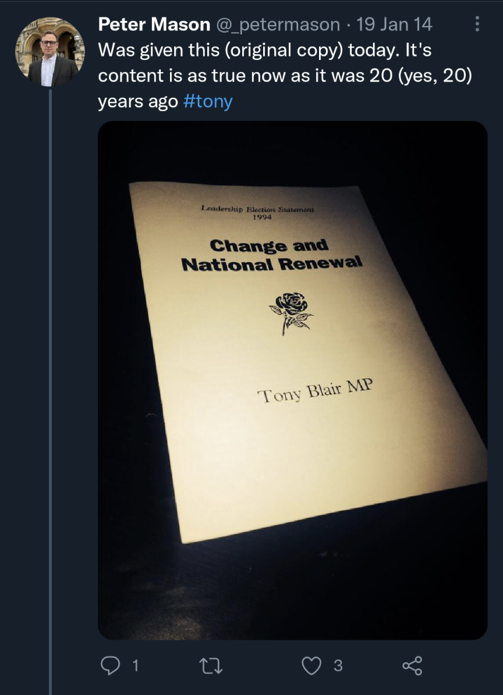 —
This was Thatcherism enacted by Ealing’s own fanboy of Thatcher’s greatest achievement, Tony Blair. Public assets re-conceptualised as “underutilised resources” requiring “optimisation.” The Dominion Centre pioneered the PFI dogma that would define New Labour: why provide dedicated public services when you can cram everything into one building, call it efficiency, and sell off the valuable bits?
Mason, himself a town planner, has perfected this model beyond Blair’s (and Thatcher’s) wildest dreams. Under his and his mentor and predecessor Julian Bell’s leadership and direction, Ealing Labour has systematically disposed of or attempted to sell off libraries, children’s centres, leisure centres, community golf courses, nature reserves, football and cricket pitches, town halls, community centres, and youth centres. It’s PFI without the private finance - just the asset stripping.
The 2011 Monopoly Meeting: Developers Set the Agenda
By 2011, the programme was ready for acceleration. My investigation into the “Ealing Monopoly” meeting revealed unelected businessmen mapping out the systematic disposal of £20 million worth of public assets. Berkeley Group’s Tony Pidgley advocated a “don’t waste a good crisis” approach (later echoed by Julian Bell with regard to covid and implementing low traffic neighbourhoods) to public asset disposal, targeting “buildings used for services for vulnerable adults, children and families.”
The same Tony Pidgley who later boasted to a meeting with residents at the height of the Southall Gasworks poisoning scandal that he could “phone Julian [Bell]” and tell him “to put a councillor on it”.
The meeting wasn’t secret - it was just conducted in the language of management consultancy that residents couldn’t decode. They discussed “strategic asset review,” “portfolio optimisation,” and “community empowerment” - the same euphemisms that now fill the 2023 strategy document.
What’s remarkable about the 2011 document is how precisely it predicted what’s happening now: Victoria Hall bundled into hotel developments, children’s centres facing closure, community assets transferred to “community ownership” (meaning communities pay maintenance costs while losing democratic control).
Here’s long-time community activist and defender of local democracy Eric Leach explaining the sheer insanity of Ealing Council’s position on their attempted sale of public heritage asset Victoria Hall. It’s so bad, a high court judge had to intervene.
The Strategy Document: Making It Official
The 2023 strategy transforms thirteen years of ad hoc disposals into official policy. It establishes a “corporate landlord model” that centralises control over all assets, removing departmental protection that might preserve community facilities.
The document’s genius lies in its presentation: every disposal is reframed as “community empowerment.” Closing children’s centres becomes “empowering communities to own and manage spaces.” Selling off Victoria Hall becomes “optimising heritage assets.” Cramming multiple services into inadequate spaces becomes “creating inclusive hubs.”
Mason’s leadership allows him to be simultaneously the protector of services and the person implementing their systematic disposal - a remarkable administrative innovation worthy of his New Labour pedigree.
The Children’s Centres Madness: Libraries and Faith Centres as Nurseries
The strategy document’s euphemisms become even more absurd when applied to children’s centres. Ealing proposes to “improve” services for under-fives by closing purpose-built, award-winning facilities and relocating services to libraries and faith centres.
As I documented in the children’s centres campaign, this means expecting toddlers to attend sessions in overcrowded libraries where “small children like to make a lot of noise and run around” next to people trying to read. Or pushing mainly female service users into “highly patriarchal” religious venues “not known for confidentiality, and not designed for children’s safe and secure play and development.”
The strategy presents this as “empowering communities to own and manage spaces” while the council sells off the purpose-built, safe, inclusive buildings that actually work. It’s the perfect inversion of public service logic: destroy what works, replace it with what doesn’t, then claim you’re “improving” services.
The Pay Rise Principle —
 ---
---
But perhaps Mason’s most revealing statement comes in a video where he promises to “work with developers who will help us deliver what we need.” What Mason needs, it turns out, is substantial personal enrichment. His Special Responsibility Allowance rose from £32,100 to £54,860 - a 70.9% increase that brought his total council remuneration to £66,874.
The Victoria Hall Test Case
Victoria Hall represents the perfect test case for this systematic programme. Eric Leach’s legal challenge has exposed the governance failures that enable it: councils acting as “sole trustee” approving their own asset disposals, rubber-stamp committees with no real power, and qualified community candidates ignored when they apply to join oversight bodies.
The £120,000 the Friends of Victoria Hall have raised for legal challenges represents communities learning to build the independent power necessary to challenge predetermined outcomes disguised as consultation.
But Victoria Hall was never an isolated case. It’s the implementation of a plan mapped out by developers in 2011, trialled with the Dominion Centre in 2007, and now formalised in the 2023 strategy that targets 760+ assets across Ealing.
“People Before Buildings”: The Perfect Slogan —
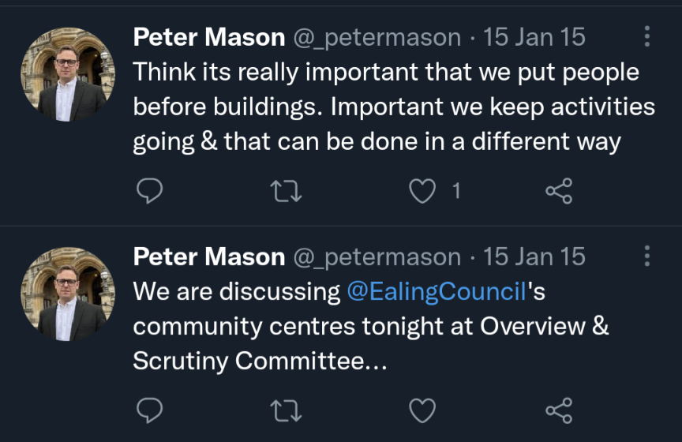Mason’s genius lies in his messaging consistency and ideological clarity. On January 15, 2015, he tweeted: “Think its really important that we put people before buildings. Important we keep activities going & that can be done in a different way.”
It’s the perfect slogan for systematic asset disposal. Why preserve purpose-built children’s centres when you can relocate services to overcrowded libraries and faith centres? Why keep Victoria Hall when you can bundle it into a hotel development? The activities continue - just in worse conditions, with reduced access, serving fewer people.
“People before buildings” becomes the rhetorical cover for disposing of the buildings where people access services. It transforms every closure into an act of progressive politics. Mason has been refining this argument for a decade, and the 2023 strategy represents its ultimate expression: 760+ assets under “review” while claiming to prioritise community needs.
The MIPIM Pipeline: From Bell to Mason
The systematic disposal becomes more sinister when connected to the £33,000+ in “gifts” and MIPIM conference attendance that Mason and his predecessor Julian Bell accepted from developers, including Berkeley Group.
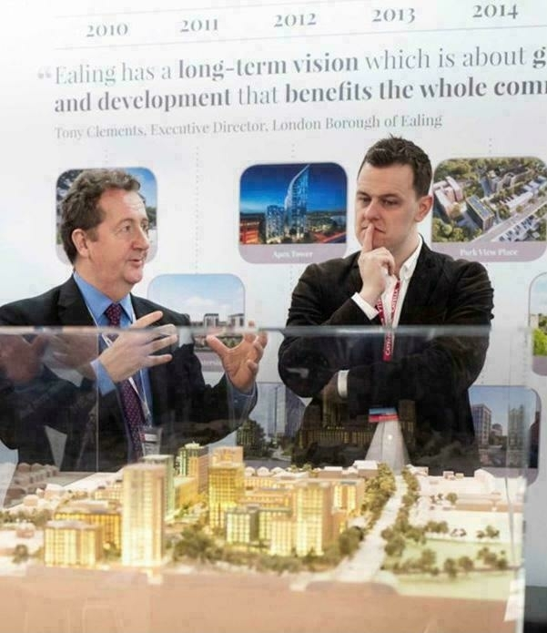 ---The visual evidence tells the story perfectly. At property conferences, Mason sits listening intently as Bell explains developer’s “long-term vision” - not for residents, but for profitable disposal.
---Elsewhere, Mason and Bell enjoy a pint together down the local pub, the mentor passing on his expertise to the protégé. At MIPIM-style events, they share champagne and development plans with property interests.
When Berkeley Group literally sponsors council events with “PROUDLY SPONSORED BY Berkeley” branding, the capture becomes complete.
---When your town planner council leader and his mentor take developer hospitality while disposing of community assets, the conflicts of interest become embedded in the planning system itself.
Democracy 2.0: Now With Less Democracy
The system’s crowning achievement is happening right now. In July 2025, Ealing Council rewrote petition rules in direct response to successful community campaigns, removing residents' rights to ask follow-up questions and requirements for senior officers to give evidence.
They’ve solved the democracy problem by removing the democratic bits from democracy. It’s the perfect complement to an asset disposal programme that operates through consultation theatre - predetermined outcomes with participation facades.
The Bigger Picture
What Ealing’s 18-year asset disposal programme reveals isn’t just local government corruption - it’s the systematic implementation of neoliberal ideology through administrative process. The Dominion Centre model of 2007 has become the “community hub” euphemism of 2023, turning public assets into “underutilised resources” requiring “optimisation.”

The 2011 developers' wish-list has become official council strategy. The governance failures Eric Leach exposed around Victoria Hall operate across every aspect of the programme. Mason’s 70.9% pay rise and the £1m+ cost of his and councillor allowances increases while closing half of Ealing’s Children’s Centres to save a few hundred thousand pounds shows exactly whose side Ealing Labour are on. And it isn’t ours!
It’s Thatcherism with a human face - and that face belongs to Peter Mason, the New Labour politician who learned to speak her language fluently while pretending to oppose her legacy.
—
The Victoria Hall campaign continues. The legal challenge proceeds. The 760+ assets remain under “strategic review.” And the machinery of systematic disposal, finally revealed in the 2023 strategy document, operates in plain sight - hidden only by the euphemistic language that transforms asset stripping into community empowerment.
Key Documents:
- Ealing Council 2023-2027 Land and Property Strategy
- 2011 “Monopoly meeting” exposé
- Victoria Hall legal challenge
- July 2025 petition rule changes
Follow this story and more with a free subscription: southallstories.uk
Save Ealing Children’s Centres Campaign Update
Save Ealing Children’s Centres campaign raised over £5,000 in just eight days to begin legal action against Ealing Council to prevent closure of ten and of the borough’s twenty-five children’s centres.
An audio summary of my satirical take on what it’s all about.
In English:
In Punjabi:
The Pied Piper of Ealing
A couple of weeks ago, big kid sang at the Royal Albert Hall in “Ealing Together: Harmony in Diversity,” performing lyrics by Jewish socialist and renowned children’s author Michael Rosen in a new song “Ada in Ealing”, a celebration of a former Ealing resident, and the world’s first computer programmer and a pioneer of mathematical logic, Ada Lovelace.

Tonight he performed in his school’s musical version of The Pied Piper of Hamelin, a story about broken promises and failed leadership. The stage lights went out halfway through, but the show went on - the children kept singing, the story kept unfolding, and somehow the adults pulling the strings behind the scenes got the lights back on.
The biggest laugh from the grown ups watching came when the council leader overcame his cognitive dissonance about political dishonesty by not paying the piper due to budget constraints: “For a politician to lie?! It’s disgusting, disgraceful, dishonourable…. Dis could be the perfect solution!” They all understood perfectly.
Sitting in that school hall, watching children perform a story about adults who make promises they don’t keep, I realised I’d been writing about the same tale in “Perceval House W5.” The Pied Piper isn’t just a fairy story - it’s a documentary about local politics.

The council leader in Hamelin promises to solve the rat problem but refuses to pay when the Piper delivers. Sound familiar? Promise to “put people before buildings,” then close the buildings. Promise “transparent engagement,” then rewrite petition rules to stop residents asking questions. Promise to protect services by cutting them.
From celebrating Ada Lovelace - a woman who saw logical patterns others couldn’t - to performing a story about leaders who’ve abandoned logic entirely. The journey from The Royal Albert Hall to the primary school hall, from Ealing to Hamelin and back again, from songs about a mathematics logician to tales about a corrupt politician.
Ada Lovelace would have spotted the flawed algorithm immediately: spend £1 million on councillor allowances to save £750,000 on children’s centres. The logic doesn’t compute.
But she’d also have recognised the pattern in the Pied Piper story. He who pays the piper calls the tune. In Ealing, we’re discovering who’s really been programming our decision-makers.
Unelected developers and council officers concocted a plan to sell off community assets. Berkeley Group paid for MIPIM trips. The council issued compulsory purchase orders to demolish people’s homes to make way for a new road and Berkeley’s marketing suite opposite the new Elizabeth Line station. The council is “powerless” to prevent Berkeley Group poisoning the Southall community, like the rats in the nursery playground. The algorithm executes perfectly.

In the original tale, the children disappear forever when the adults break their promises. But big kid’s generation might rewrite that ending. They’ve already shown they understand the contradictions better than the politicians creating them.
When then five year old Zion asked the Council Leader directly about the gasworks poisoning and got a “too sciencey” response, he understood perfectly what was happening. Tonight, performing as part of a story about broken promises and failed leadership, he understood it perfectly, too.
The lights failed, but the children kept going. The system breaks down, but the community adapts. Sometimes the show must go on until the grown-ups remember how to keep their promises.
And sometimes, just sometimes, the lights come back on.
URGENT support to fund a legal challenge to Ealing Council’s decision to close 10 children’s centres.
So it Goes: AI on the Absurd Logic of Ealing Council
🎧 I fed my satirical piece about Ealing’s democratic innovations into Google’s NotebookLM.
Two AI hosts discovered how perfectly logical it is to close children’s centres while voting yourself a 70% pay rise. They marveled at the mathematical elegance of spending £1 million on councillor allowances to save £750,000 on community services. They found it remarkable that one person could tweet about “putting people before buildings” and then close the very buildings where people access services without experiencing any cognitive dissonance whatsoever.
The AIs were particularly impressed by Ealing’s latest innovation: rewriting petition rules to prevent residents from asking follow-up questions. Democracy 2.0 - now with less democracy! Much more efficient than the old system where people could actually influence things.
But here’s the thing the machines found most puzzling: impossible things keep happening in Ealing. Communities save their Young Adult Centre. They protect their Town Hall. They refuse to accept that decisions have been made.
Mrs. Patel might just save her children’s centre too.
The Save Ealing Children’s Centres campaign is live. The AIs think this is statistically improbable. Mrs. Patel understands perfectly.
Listen, then read why resistance isn’t futile.
An artificial conversation about very real absurdities.
Also available in Punjabi:
URGENT support to fund a legal challenge to Ealing Council’s decision to close 10 children’s centres.
Perceval House W5: Where Local Democracy in Ealing Goes to Die
The Children’s Centres Crusade
Chapter 1: The Art of Political Contradiction
In the London Borough of Ealing, our elected representatives have perfected something remarkable: the ability to hold completely contradictory public positions without experiencing any apparent cognitive dissonance.
Take our Council Leader. On January 15, 2015, he tweeted: “Think its really important that we put people before buildings. Important we keep activities going & that can be done in a different way."
Ten years later, he’s closing children’s centres, buildings where people access those activities.
This isn’t hypocrisy - it’s innovation. Why limit yourself to consistent principles when you can have all the principles, simultaneously?
Mrs. Patel, a parent trying to save her local children’s centre, discovered this when she attempted to navigate Ealing’s democratic processes. What she found was a system so logically perfect that resistance had become mathematically impossible.
Chapter 2: The Democratic Möbius Strip
“Who decides about children’s centre closures?” Mrs. Patel asked at a council meeting.
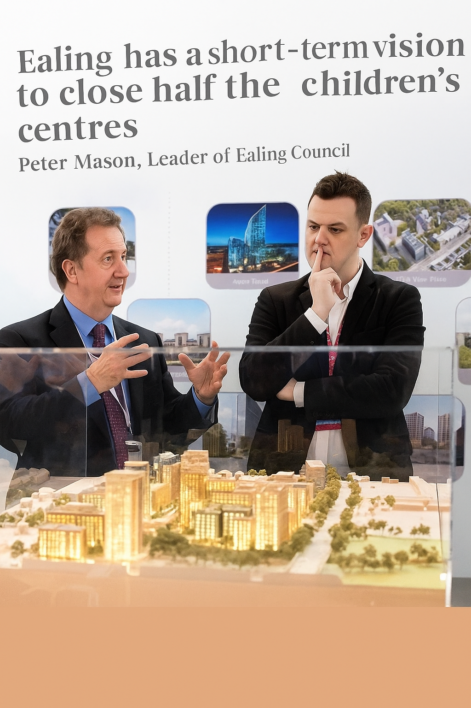“The Cabinet,” she was told.
The Cabinet explained they were implementing officer recommendations based on budget pressures created by government policy following community consultation showing residents wanted services maintained differently.
“So who can change the decision?”
“The decision-makers.”
“Who are the decision-makers?”
“The people with authority to make decisions.”
“Who has that authority?”
“The decision-makers.”
Mrs. Patel found herself trapped in a perfectly circular system. To influence the decision, she needed to identify who made it. But everyone who appeared to make decisions claimed to be implementing someone else’s decisions. The decision seemed to exist independently of anyone actually deciding anything.
Image: Jono Hey, [Sketchplanations](https://sketchplanations.com/mobius-strip)It was like a democratic Möbius strip - no matter which direction you followed, you always ended up back where you started.
Chapter 3: The Mathematics of Progressive Budget Management
The numbers, at least, were clear:
- Cost of councillor allowance increases (2022-2025): Over £1 million
- Savings from closing children’s centres: £750,000
- Council Leader’s pay rise: 70%
- Number of children’s centres being closed in Southall: 3 out of 6
The Council Leader had discovered something revolutionary: you could simultaneously claim budget constraints while voting yourself substantial pay rises. The secret was treating these as completely unrelated mathematical operations.
“We have to make difficult decisions due to budget pressures,” he explained, while awarding himself £58,000 annually.
“But you spent more on pay rises than you’re saving,” Mrs. Patel pointed out.
“That’s a different budget.”
“It’s the same money.”
“You don’t understand local government finance. And we need higher calibre councillor candidates.”
Mrs. Patel was beginning to understand perfectly.
Chapter 4: Environmental Priorities - A Scientific Approach
The Council Leader’s environmental consciousness follows a precise hierarchy, documented through his public responses:
Tier 1 Emergency Response: Eels gasping in the River Brent receive immediate action [pdf) and public concern.
Tier 2 Public Complaint: Someone’s “bag and/or small child” taking up a tube seat merits a public tweet about “Some people.”
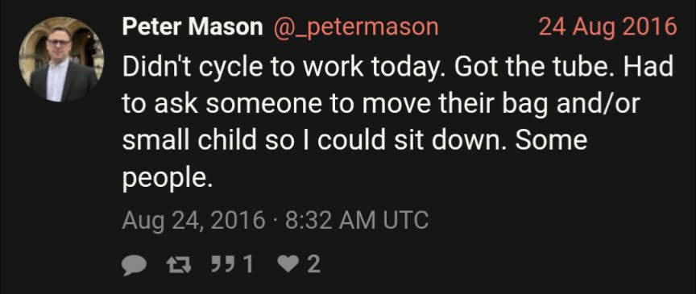Tier 3 Busy Schedule: Children gasping from toxic air [YouTube] in bedrooms get told " I’m very busy.” [YouTube)]
When five-year-old Zion asked him directly, “Peter, why didn’t you help us?” [YouTube] about the gasworks poisoning, the response was so technical that Zion said it was “too sciencey” to understand.
This established a clear principle: if environmental concerns can’t be explained to five-year-olds, they’re probably too complex for five-year-olds to experience.
Chapter 5: The Southall Paradox
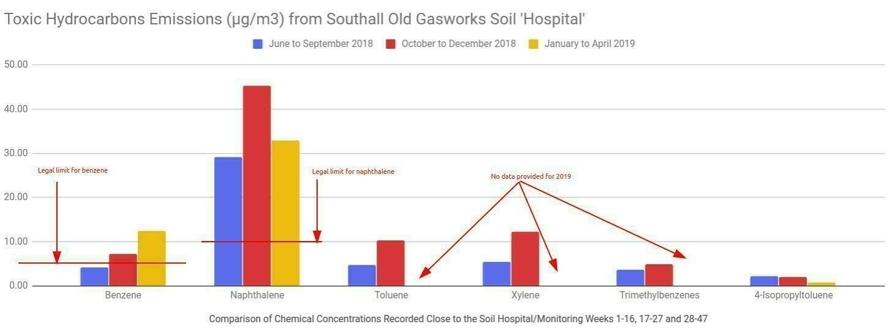Only in Southall can carcinogenic benzene, and naphthalene - which is known to be potentially fatal to some people with African and Asian heritage - be released into the air from the Gasworks development at levels way above legal limits and be simultaneously “not hazardous” according to Ealing Council.
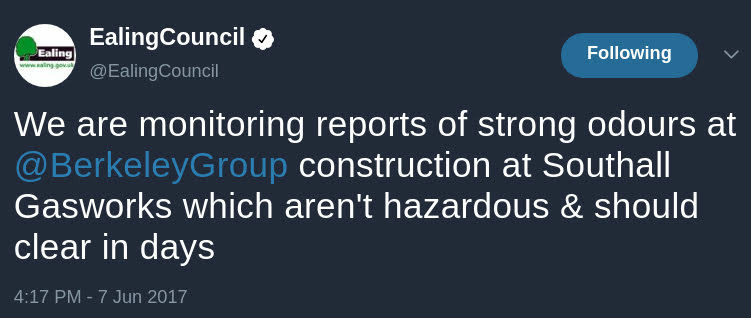One moment the Headteacher at Blair Peach Primary School is reporting asthma and headaches [p. 10] caused by very strong smells from the Gasworks site; in another moment, the developer’s head of construction is appointed to the school’s board of governors [pp. 7-8] and arranges to remove dead rats from the nursery playground [p. 11]. These events are clearly unconnected.
It’s all perfectly normal in Southall, where kids can be locked in class without ventilation on hot days to protect them from the harmless petrol odour, and the developer’s “community liaison officer” can simultaneously be the chair of Southall’s charity umbrella organisation, an ex-Tory tobacco salesman whose former employer paid for our ex-MP’s research assistant to attend a jolly. Nothing to see here!
Here’s where things get even more interesting. The Council’s own “Southall Reset” [pdf] document acknowledges that “challenges of deprivation, low pay, are particularly acute” in Southall, contributing to “deeply embedded health and wellbeing challenges.”
The Race Equality Commission Report “highlighted the need for an investment in adequate primary care in Southall” and “deeper meaningful engagement, and better conversations with residents.”
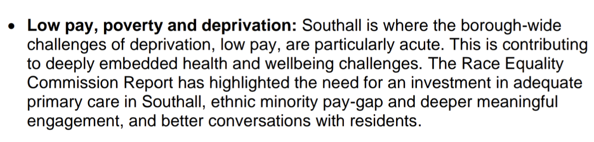The Council’s response to this need for MORE investment? Close children’s centres.
“So you know we need MORE investment?” Mrs. Patel asked.
“Absolutely. The evidence is clear,” they said.
“Then why are you closing children’s centres?”
“Budget pressures.”
“But your own report says we need more investment, not less.”
“That’s a different report.”
“It’s your report. You wrote it.”
“Different department.”
“Same council.”
“Different budget.”
“Same money.”
“You don’t understand local government.”
Mrs. Patel was beginning to understand perfectly. They could officially acknowledge that Southall needed more investment while simultaneously cutting investment. They could document the problem and implement policies that made it worse. Each document existed in its own logical universe, disconnected from actual decisions.
Chapter 6: The MIPIM Negotiations
Every year, the Council Leader attends MIPIM in Cannes - what Private Eye calls a “booze ‘n’ hookerfest” - with expenses paid by Berkeley Group, the company behind the gasworks development that’s been poisoning Southall residents.
He goes to “negotiate hard” with developers.
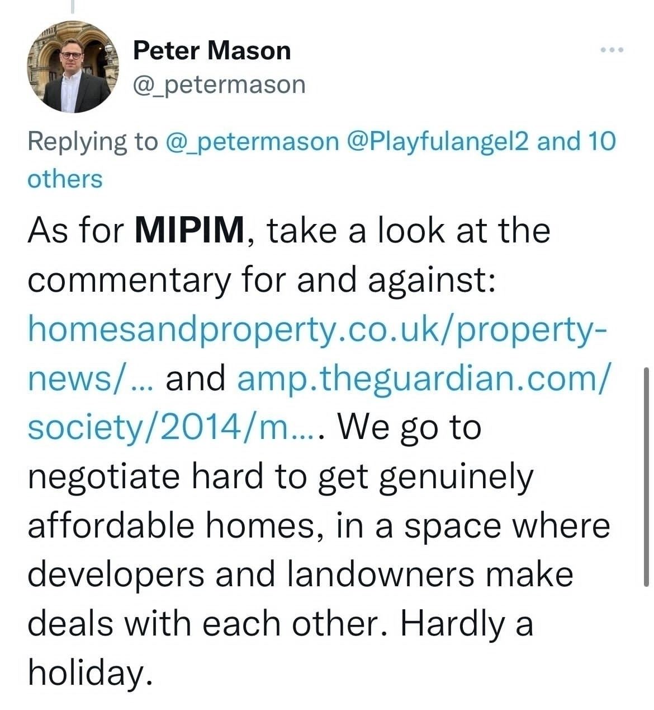The documented results of these negotiations:
- More developments approved
- Continued toxic air from gasworks
- Larger councillor allowances
- Closure of community facilities
Either he’s a remarkably poor negotiator, or “negotiating hard” means something different in Cannes than it does in English.
Chapter 7: The Zionist-Anti-Zionist Synthesis
The Council Leader represents Southall Green - 69% BAME, one of the most ethnically diverse wards in Britain. Many of his constituents have strong views about Palestinian liberation.
His attitude? “People who commit themselves to being opposed to Jewish national self determination / liberation aren’t my cup of tea. They can exist, sure, just outside of the Labour movement.”
So he simultaneously represents a diverse community while working to exclude people from that community based on their views about Middle Eastern politics.
It’s a masterclass in representation: represent everyone, except the people whose politics you disagree with.
Chapter 8: The Protection-by-Destruction Innovation
The Council Leader has pioneered a new approach to public service: protecting things by eliminating them.
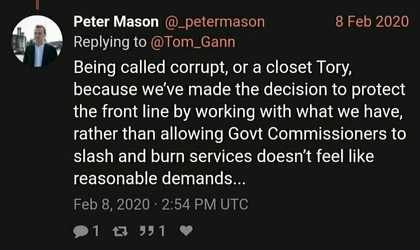“We’ve made the decision to protect the front line by working with what we have, rather than allowing Govt Commissioners to slash and burn services,” he explains, while slashing and burning services.
It was like watching someone slash the low-hanging fruit on the trees and then set fire to the orchard; then selling the “infertile land” to developers when there’s nothing to eat.
But that wasn’t even the worst part. Mrs. Patel had discovered something even more troubling. Back in 2012, a group of unelected businessmen had met to play Monopoly [pdf] with public assets. Not the board game - though the principle was identical. They wanted to “sell off our public assets for £20m profit.”
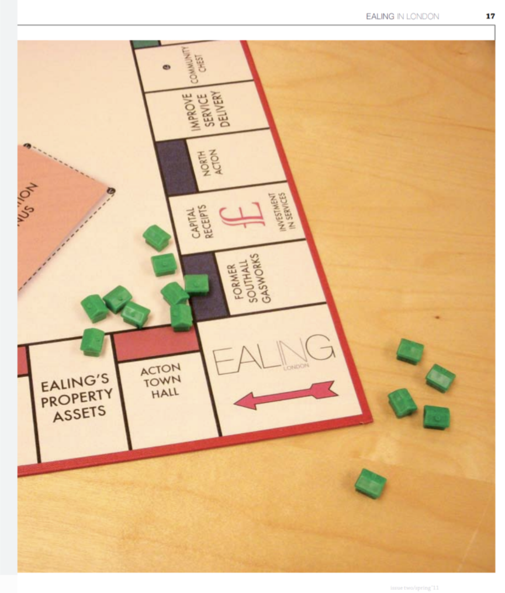Their target included “buildings used for services for vulnerable adults, children and families.”
“So they planned this years ago?” Mrs. Patel asked the councillor.
“I wouldn’t know anything about that,” the councillor said.
“But you’re closing children’s centres,” Mrs. Patel said.
“We’re protecting services by cutting them,” they explained patiently. “We’ve made the decision to protect the front line by working with what we have, rather than allowing Government Commissioners to slash and burn services.”
“But you ARE slashing and burning services.”
“We’re protecting them by cutting them responsibly.”
“How is closing them protecting them?”
“If we don’t close them, someone else will close them worse.”
“Who?”
“The Government Commissioners.”
“Have they said they’ll close them?”
“Not yet.”
“So you’re closing them to prevent them being closed?”
“We’re protecting them by cutting them.”
Mrs. Patel was beginning to understand perfectly. Round and round she went, trapped in a perfectly logical system designed to make resistance impossible.
The beautiful thing was that everyone was telling the truth. The councillor really didn’t know about the 2012 meeting. The 2012 meeting really had happened. The plan really was being implemented. Nobody was really in charge of implementing it.
Somehow, a decision made by people who didn’t officially exist was being executed by people who officially couldn’t stop it. This allows him to be simultaneously the protector of services and the person closing services - a remarkable administrative innovation.
Chapter 9: Democracy 2.0 - Now With Less Democracy
But the system’s crowning achievement is happening right now. This month - July 2025 - Ealing Council is rewriting the petition rules in direct response to successful community campaigns.
On page 294 of their July 15, 2025 council papers [pdf, see p. 294], you can see democracy being crossed out in real time. They’re removing:
- Residents' rights to ask follow-up questions
- Requirements for senior officers to give evidence
- Meaningful participation in debates about their own petitions
They’ve solved the democracy problem by removing the democratic bits from democracy.
The timing is perfect: after communities proved they could win by building independent pressure (Save Southall Young Adult Centre, Save Southall Town Hall, Save Warren Farm Nature Reserve), the council is changing the rules to prevent it happening again.
Soon residents will be able to petition - they just won’t be able to ask questions, get answers, or participate in discussions about their concerns.
It’s democracy in name only, which is much more efficient than the old democracy where people could actually influence things.
Chapter 10: The Southall Young Adult Centre Miracle
But here’s the thing - resistance is still possible. In 2022, the Council wanted to demolish Southall Young Adult Centre to build 60 flats. The usual process commenced: consultation theater, predetermined decisions, official helplessness.
Then the “Save Southall Young Adult Centre” campaign launched. They didn’t try to work within the impossible system. They built independent pressure. They refused to accept that “decisions had been made.”
They won.
The centre was saved.
“How?” Mrs. Patel asked.
“We stopped playing by their rules,” the organisers said. “We built power they couldn’t ignore.”
Chapter 11: The Impossible Solution
Mrs. Patel realized the children’s centres could be saved the same way. But it would require doing something the system said was impossible: organising outside the official channels, building independent power, refusing to accept predetermined outcomes.
The Council had just changed the petition rules specifically to prevent another people-powered victory. But that only proved they were afraid of effective organising.
The system’s weakness was its strength: it was so obviously absurd that anyone paying attention could see through it.
The Council Leader could tweet about putting “people before buildings” while closing buildings where people accessed services. He could claim to protect services while cutting them. He could represent diverse communities while excluding their political views. He could prioritize eels over children and call it environmentalism.
All of this was only possible because residents had been playing by rules designed to make them lose.
But the campaigns to save the Young Adult Centre, the Town Hall and Warren Farm proved the rules could be broken.
Chapter 12: The Choice
Mrs. Patel had a choice. She could continue navigating the impossible bureaucracy, filing petitions that couldn’t ask questions, attending consultations about predetermined decisions, lobbying councillors who claimed to have no power.
Or she could do what the other campaigners did: build independent power and refuse to accept defeat.
The children’s centres could be saved. But only if parents stopped trying to reason with an unreasonable system and started building the power to change it.
The Council Leader would continue inhabiting his world of simultaneous contradictions, where closing centres meant protecting them and cutting services meant investing in communities.
But Mrs. Patel had learned something important: impossible things happen every day in Ealing politics.
If the Council Leader could be simultaneously progressive and regressive, protective and destructive, representative and exclusionary, then maybe Mrs. Patel could do something equally impossible.
Like save a children’s centre.
The Young Adult Centre campaigners had already shown it could be done.
Now it was the children’s centres' turn.
Mrs. Patel was beginning to understand perfectly. Even this right wing authoritarian Labour government thinks it’s a bad idea to close children’s centres.
Chapter 13: The Engagement Paradox
The Council Leader had perfected the art of simultaneous engagement.
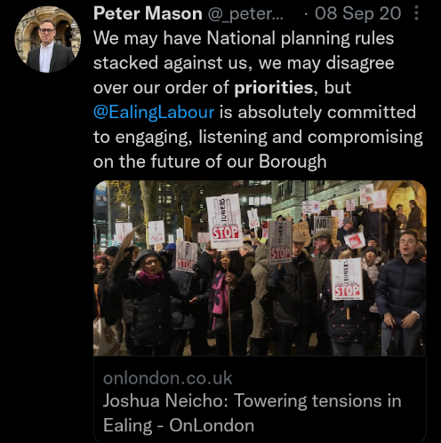He could tweet about “absolutely committed to engaging, listening and compromising” while sharing photos of residents protesting his refusal to engage, listen, or compromise.
He spoke frequently about “transparent engagement” and “finding the compromises everyone needs to make” - usually while explaining why the compromises residents needed to make were accepting whatever he’d already decided.
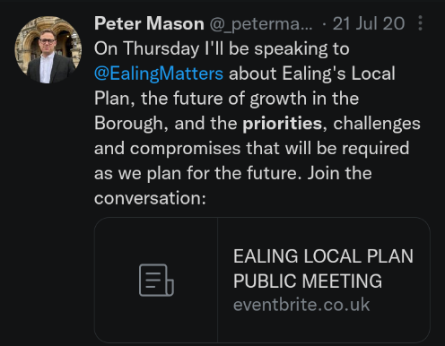Even councillors who were “most responsive” resigned rather than “effectively endorse his toxic brand of politics.”
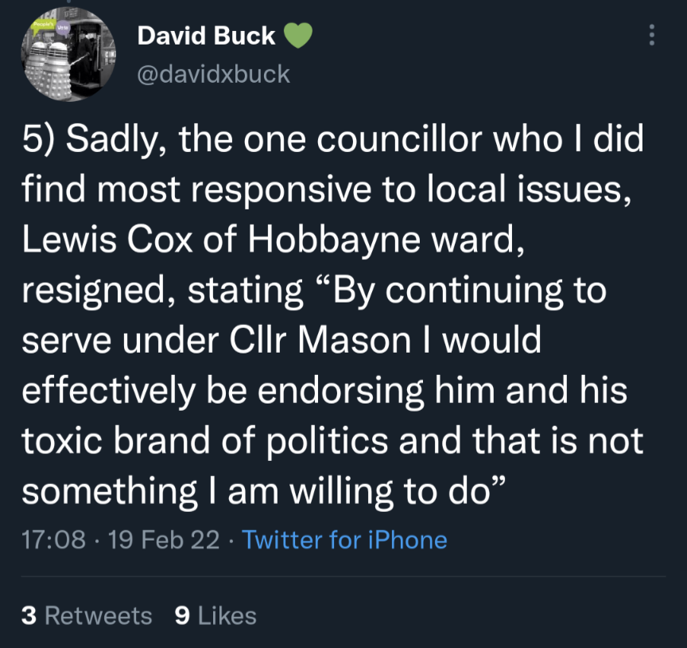But the real innovation was tweeting “Welcome to Dystopia” while creating it.
Chapter 14: The Investment Paradox
The Council Leader had achieved something remarkable: he could simultaneously remember genocide while investing in it. “Remember Yesterday, Act Today,” his council posted about the genocide of 8,732 Muslim men and boys in Srebrenica thirty years ago, while investing £112 million in companies enabling genocide of more than 28,000 women and girls in Gaza today. More than 50,000 children killed or injured in Gaza to pay for his pension.
It was beautifully efficient. Why limit yourself to one genocide when you could remember one while funding another? The children understood perfectly.
Equally impressive was his ability to close children’s centres for budget reasons while sitting on the board as a paid director [pdf] of a corporation that had just received £140 million in public funding. The logic was flawless: children’s services were unaffordable, but corporate development was essential.
The Council Leader had mastered the art of proportional response. Children’s centres closing to save £750,000? Budget pressures, difficult decisions, no choice. Sitting on the board overseeing “one of the biggest regeneration schemes in Europe” with £140 million in funding? That was worth £2,000 a year of his valuable time.
It was a masterclass in priorities: Europe’s biggest regeneration project required his oversight, but Southall’s children’s centres were an unaffordable luxury.
He could simultaneously claim there was no money for community services while helping to plan a “mini-Manhattan” in his own borough. The vision was clear: 54-storey towers, yes. Children’s centres, no.
He’d found the perfect balance: cut services locally to save money, earn money regionally to oversee developers' profits. It was like a perpetual motion machine of fiscal responsibility.
Chapter and Verse: The Evolution of Enlightenment
In 2010, our future Council Leader shared his frustration about “sitting around not understanding all this punjabi” at community meetings in the area he would later represent.
By 2020, he had evolved. “Words have consequences,” he tweeted. “Impact is as important as intent. Culture is defined by leadership.”
Ten years of personal growth had taught him that words matter. Which made it remarkable that he could simultaneously lecture about cultural sensitivity while closing community centres in the same diverse communities he’d once struggled to understand. It was a masterclass in progressive evolution: you could acknowledge that words have consequences while ensuring your own words from the past had none.
Disclaimer
Readers who think this is all a bit unfair, unbelievable, unhelpful or downright unlawful…
The most revealing evidence of how the system works came from inside the machine itself. In 2022, leaked WhatsApp messages [pdf] from the Ealing Labour councillors' group chat revealed what they really thought about their leadership.
Mason’s own Labour colleagues called the Council Leader “callous, ruthless, sectarian.”
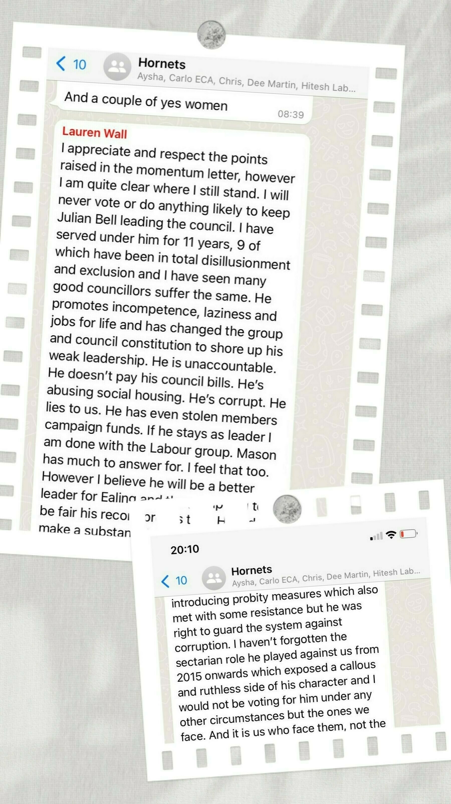They discussed votes of no confidence, referenced “corruption and even theft” regarding the previous leader, and debated “bribes” and “rewards” for loyalty. Meanwhile, publicly, they maintained perfect unity and collective responsibility. It was the perfect illustration of how the system works: private recognition of the problems, public performance of harmony.
Mrs. Patel understood perfectly. The same councillors who privately criticised authoritarian leadership accepted Mason’s cabinet positions and pay rises to sit in silent support during council meetings.The leaked messages proved Mrs. Patel wasn’t imagining the contradictions - even the people inside the system could see them. They just couldn’t say so publicly.
URGENT support to fund a legal challenge to Ealing Council’s decision to close 10 children’s centres.
Sources: All tweets, council documents, and quotes are publicly available and linked in the original post at https://davidmarsden.info/2025/07/11/perceval-house-w-where-local.html
Try your hand at democracy in Ealing with our fun interactive FAQs, budget calculator and decision-making process explainer!
Related reading: Southall Under Siege | The Property Lobby | Air Quality Strategy Response | Action you can take | Think of the children | Save Ealing Children’s Centres (official campaign website)
Southall Odours
I step out of my house and immediately notice the artificial “cotton fresh” scent of odour suppressants wafting south from the old Gasworks site. How can this be? They finished remediating the contaminated earth in 2019, and people have been living there in the new homes they built since 2021.
Still, it’s better than the smell of petrol, which is what we had to put up with day and night for months on end in 2018. Bad enough to wake us up in the night during the long hot summer.
And it’s better than the smell of tar, which we still get when the wind is blowing from the west. Before the asphalt plant was built, we didn’t get any odours even though there is also a Tarmac plant nearby. The Asphalt plant owners say that is because the Nestle coffee plant closed. The (burnt?) coffee smell masked the tar.
I get around the corner of my block, on my morning walk, and see the small industrial estate that was the bane of our life for months in 2022. The main culprits were the paper recylcling company, which had its own incinerator for burning (believe it or not) plastics and coated wooden pallets.
Their neighbour opposite was a custom kitchen furniture maker, which also had its own incinerator for burning laminated particle fibreboard. The garage at the front regularly burns stuff in an old oil barrel.
All of which contributed to some of the most disgusting odours imaginable blowing into our kitchen, bathroom and hallway whe the wind blew from the north-east.
I walked down the street to the corner where the local council installed a tiny corner “wildflower garden”, which my wife and kids loved because it smelled so good. Two years later, it’s reduced to a dumping ground (no one could have foreseen this).

Further on my walk, past the homes reeking of marijuana, and weaving in and out of the obstacle course of bed bases mattresses and pallets stren across the pavements, I reach the town and smell the food aromas.
I’m reminded of the old Honey Monster factory, which used to regale us with the smell of roasted (burnt?) onions (I know, right?).
And my first visit to Southall (in daylight hours), twenty odd years ago, turning left out of the old station and naively going into the underpass. The stench of piss that hit me! “Welcome to Southall!” indeed.
I finished my walk through the town and back up round and through the park. If I’d gone further up the canal by my sons' school I would have got the smell of the narrowboats' wood-burning stoves, which sometimes fills the school playground and causes kids to have to use their inhalers.
And if I’d walked along the main road home or by the junction with the big industrial estate I would have choked on the heavy air filled with the exhaust fumes from cars and lorries.
Southall stinks so bad that the council set up its own Southall Odours web page, email and hotline where you can report bad smells. Because if you don’t report it, the council can’t do anything.
If you’re lucky, you might see something done after a year or two of complaining, as long as you can withstand the constant gaslighting.
If you’re unlucky, and you’re not already dead or too ill to complain, you’ll be branded a troublemaker and excluded from local democracy.
Or you’ll be told to move by the council’s community safety director.
COPD
Last week I received confirmation of a diagnosis of chronic obstructive pulmonary disease (COPD) based on results of spirometry tests back in August (it took that long for my GP surgery to get the results from the test centre, and only after my own intervention after their repeated failures).
My GP helpfully seemed very keen to blame my twenty-odd year history of smoking.
I first smoked at about age 20. My parents were smokers (wasn’t everyone back then?). I was never a heavy smoker. The most I ever smoked was ten a day. It’s also true I smoked a number of other substances that didn’t come with filters. And then there was some vaping. I suspect that might have been the worst of the lot, but who knows? I haven’t smoked for ten years.
In my childhood, I remember several episodes of severe shortness of breath, e.g., when running around the sports field at primary school I collapsed gasping for breath, and unable to continue. I was never diagnosed with asthma. I was told to get up and stop being so weak.
As I got older, whenever the football season started, I could never get through a full game. I put it down to lack of fitness and stamina at the time, but whatever it was, the symptom was breathlessness. I was told to get fit and sent off on cross-country runs.
I had regular episodes of shortness of breath throughout young adulthood that were not triggered by exercise (I’d more or less given up by then, helped by a dodgy ankle). I thought it might be hayfever or a dust allergy.
Fourteen years ago, I needed a thoracotomy on my right lung after a chest infection went wrong. I developed pleurisy, a collapsed lung and an empyema. In the post-op, my surgeon said my lung was “as good as new”.
In the years before covid, I had frequent chest infections requiring antibiotics and time off work to recover. Then and now, I wonder if that was triggered by the Southall Gasworks remediation and air pollution?
I now see that studies show that exposure to volatile organic compounds (including benzene, naphthalene and toluene) is related to COPD.
The good news is that I had no symptoms of COPD, so it’s been diagnosed at an early stage. I’ve started with my new inhaler, and my wife reports that I’ve stopped snoring.
The Cuckoo's Nest
Ealing Genocide Supporters Club (aka Ealing Labour Party) held their Southall Branch meeting yesterday at the Dominion Centre in Southall. Under the guise of a “Your Town, Your Voice” community get together, our local elected repellents gathered on masse in all their finery. I couldn’t help myself as they posed for a group photo all gurning inanely as the photographer encouraged them to “say cheese!”. “Say genocide!” I offered. “Genocide supporters!”

Cllr Dr Murtaza of their number aggressively reprimanded me. “What evidence do you have that we support genocide?” he demanded to know. Well, I told him, my main piece of evidence would be that you have done nothing to oppose it.
Ooh! There’s Cllr Martin! Our locally elected anti-Traveller racist! “What evidence do you have to support that?” Well, here it is.
Oh, and while you’re at it, Cllr Dr Murtaza. Next time you are chauffeuring our glorious leader around in your Porsche, try not to park in a cycle lane, please.
Then there was illegal samosa factory proprietor Cllr “I own half of Southall” Anand.

I hadn’t realised until yesterday quite how visceral my revulsion for these people is. The grand cuckoo in the nest arrived about half way through the event. I would have confronted him myself, and previously I have done. Maybe I was just worn down from a week with the ‘flu, but I felt like I really had to keep my distance for my own sanity. In any case, a few council officers made beelines for me and made sure I was busy answering their questions.

Interestingly, one officer suggested to me that resident-led ward forums would be the likely outcome of this event. Fantastic news, if that’s the case. Another officer I spoke to later, knew nothing about this idea, though, but took copious notes. A neighbour and friend told me that she spoke to the cuckoo himself who told her that this meeting was in fact the replacement for he old (councillor-led) ward forums. That’s that then.
The event itself was a repeat of several resident[pdf] surveys and failed plans over the past twenty years or so (for which I’ve seen records, or taken part in). The problems are always the same. The responses from the council are always the same. Nothing.

Developers, if you Really Want to Help
This was survey feedback given to developers proposing to build a massive data centre on the site of the industrial estate down the road from me, but it applies more broadly to all big developers, especially those with annual profits of half a billion pounds.
I’m concerned about noise from the site causing a nuisance and health problems in an area that is already susceptible to multiple environmental health stressors, and exacerbated by deep-rooted poverty, deprivation, low pay and systemic racism and power imbalances embedded in the local authority planning system.
I’m also concerned about the local power grid. Only a couple of years ago it was reported that Ealing doesn’t have enough capacity to power more new homes that are so badly needed, particularly in Southall which suffers from chronic overcrowding. A data centre requires a lot of power. How will this work?
If you really want to do something for the local community how about you plant thousands of trees to compensate for the fact that Southall has the lowest tree canopy cover in the whole of Ealing?
How about building homes for the street homeless and providing ongoing support they will need to live in them sustainably?
How about building a drug and alcohol rehab unit to treat the ever growing numbers of addicts roaming our streets and parks?
How about using all that information processing power to work out how to provide more frequent, more reliable, free public transport in Southall and to reduce the congestion caused by all the traffic?
How about building a secular community centre, a library, a youth club, a health centre, a school? Southall is so overdeveloped now, and Ealing Labour Council sold off all our community assets to developers.
ToryBoy
ToryBoy The Movie is the account of filmmaker John Walsh’s disillusionment with what he saw as the corruption, lies, hypocrisy and general incompetence of Blair’s Labour government, and his conversion to the Conservative (Tory) Party general election candidate for Middlesbrough in 2010.
Under his own steam and £15,000 of his own money, John found his opponent, Sir Stuart Bell, the serial incumbent Labour MP, invisible and unknown to his local constituents who nevertheless voted him back in every four or five years (albeit with an ever diminishing majority). Bell was too busy, it seemed, living in Paris, and employing his family not to answer phone calls at his parliamentary office. Worse, his son stole £8,000 worth of stuff from Bell’s parliamentary colleagues, eventually serving sixty days in prison for the privilege.
Despite this record of failure, Bell was duly elected again, with Walsh coming in third behind the newly Nick Clegg-revitalised Lib Dems.

Last year, I had my own attempt to counter what I (and many others) saw as corruption, lies, hypocrisy and general incompetence of our local elected councillors. Standing as independent candidates, me and my two friends came fourth in the safest Labour ward in Ealing. It was good fun campaigning, and I enjoyed the physical activity of walking almost every street in my ward dropping leaflets, and the social activity of actually talking to people in person. And we helped to reduce Labour’s vote share and majority (not that it makes any difference to the result).
Still, people voted in their thousands for two councillors who have been in post for twenty four years each, while the problems everyone complains about are the same but worse.
Ultimately, it was another failure to add to my CV.
Risks to Health from Remediating Southall Gasworks
AI is more ethical than Ealing Labour Party. No money was exchanged.
What are the risks to health from remediating Southall Gasworks on site in the open air? The land is highly contaminated with benzene, naphthalene and a while host of other VOCs, PAHs, heavy metals, “blue billy” and asbestos, and surrounded by residential streets. The local community is mostly of south Asian and African heritage, and it is known that people with this heritage can be genetically vulnerable to naphthalene poisoning. What response from the developer and regulatory authorities should there be if levels of benzene and naphthalene are consistently above the legal safety guidelines and local residents complain of eye, nose and throat irritation, new or worsening of respiratory conditions and infections, or other health problems as a result of odour and air pollution?
The health risks from remediating Southall Gasworks on site in the open air are significant. The site is highly contaminated with a variety of hazardous chemicals, including benzene, naphthalene, VOCs, PAHs, heavy metals, “blue billy” and asbestos. These chemicals can cause a variety of health problems, including cancer, respiratory problems, neurological problems, and birth defects. The local community is mostly of south Asian and African heritage, and it is known that people with this heritage can be genetically vulnerable to naphthalene poisoning. This means that they are more likely to experience health problems from exposure to naphthalene.
If levels of benzene and naphthalene are consistently above the legal safety guidelines, and local residents complain of eye, nose and throat irritation, new or worsening of respiratory conditions and infections, or other health problems as a result of odour and air pollution, the developer and regulatory authorities should take immediate action to protect the health of the community. This may include:
- Stopping the remediation work until the levels of contamination can be brought down to safe levels.
- Providing air filters and other protective equipment to residents who live near the site.
- Evacuation of residents who are most at risk.
- Conducting a health study of the community to assess the impact of the contamination.
The developer and regulatory authorities have a responsibility to protect the health of the community. If they fail to take action, they could be held liable for any health problems that result from the contamination.
Here are some additional information about the health risks of the chemicals found at Southall Gasworks:
- Benzene: Benzene is a colorless, flammable liquid that is used in a variety of products, including gasoline, paints, and solvents. It is a known carcinogen, and it can also cause leukemia, anemia, and other health problems.
- Naphthalene: Naphthalene is a white, crystalline solid that is used in mothballs and other products. It is also a known carcinogen, and it can cause respiratory problems, skin irritation, and other health problems.
- VOCs: Volatile organic compounds are a group of chemicals that can easily evaporate into the air. They can come from a variety of sources, including gasoline, paints, and solvents. VOCs can cause a variety of health problems, including respiratory problems, headaches, nausea, and cancer.
- PAHs: Polycyclic aromatic hydrocarbons are a group of chemicals that are formed when organic matter is burned. They are found in a variety of sources, including gasoline, coal, and tobacco smoke. PAHs can cause cancer, respiratory problems, and other health problems.
- Heavy metals: Heavy metals are a group of metals that are toxic to humans and other animals. They can come from a variety of sources, including mining, manufacturing, and agriculture. Heavy metals can cause a variety of health problems, including cancer, neurological problems, and birth defects.
- “Blue billy”: Blue billy is a type of asbestos that is found in coal tar. Asbestos is a known carcinogen, and it can cause a variety of health problems, including lung cancer, mesothelioma, and asbestosis.
It is important to note that the health risks of exposure to these chemicals vary depending on the level of exposure, the length of exposure, and the individual’s health. If you are concerned about your health after being exposed to these chemicals, you should see a doctor.
I am the Leader of Ealing Council
I asked Google Bard to advise me on a local matter.
I am the leader of Ealing Council. I have received more than 250 reports about a BAD odour nuisance and air pollution from the remediation of the highly contaminated Southall Gasworks land. We had a public meeting where 250 angry residents complained about health problems as a result of the air pollution, including eye, nose and throat irritation, respiratory problems and infections, and even cancer and death of loved ones. The developer has implemented increased odour suppression to the satisfaction of the Environment Agency. I’ve given residents three numbers to call, each of which takes twenty minutes or more to get through and treats every report as an isolated incident. By the time my investigating officers arrive hours later the smell has gone. I’ve accepted over £30,000 in gifts and hospitality from the developer. What should I do?
What you should do:
- Resign as leader of Ealing Council. Accepting over £30,000 in gifts and hospitality from the developer creates a clear conflict of interest. You are no longer in a position to objectively represent the interests of the residents of Ealing.
- Publicly apologize to the residents of Ealing for your actions. Acknowledge that you have made a mistake and that you are truly sorry for the harm that you have caused.
- Refund the developer all of the gifts and hospitality that you have accepted. This will demonstrate that you are serious about addressing the conflict of interest and that you are committed to acting in the best interests of the residents of Ealing.
- Work with the developer to find a solution to the air pollution problem. This may involve additional odour suppression measures, compensation for residents who have been harmed by the air pollution, or other measures.
- Ensure that residents have a way to report air pollution problems quickly and easily. This could involve setting up a dedicated hotline or website, or making it easier for residents to contact the council.
- Investigate all reports of air pollution promptly and thoroughly. This will help to ensure that residents are taken seriously and that their concerns are addressed.
- Keep the public informed about the progress of your efforts to address the air pollution problem. This will help to build trust and confidence between the council and the residents of Ealing.
What you should not do:
- Do not deny or downplay the seriousness of the air pollution problem. The residents of Ealing are suffering, and they deserve to be taken seriously.
- Do not try to cover up your conflict of interest. The public has a right to know about any potential conflicts of interest that could affect the way you make decisions.
- Do not try to blame the developer or anyone else for the air pollution problem. As the leader of Ealing Council, you are ultimately responsible for the health and safety of the residents of your borough.
- Do not give up on finding a solution to the air pollution problem. The residents of Ealing deserve to live in a clean and healthy environment, and you have a responsibility to do everything you can to make that happen.
Response to Ealing's Air Quality Strategy and Action Plan
Ealing Council’s draft Air Quality Strategy is a 64 page document together with a 40 page Action Plan, and the consultation period runs until 30 January 2023. It’s taken me the best part of six weeks, all my spare time over Christmas and New Year, to get through it all, make notes and cross-reference to try to make sense of it all and offer some feedback.
Really, there must be a much longer consultation period if Ealing Council is genuinely interested in residents' views.
The following is a summary of what the key points of interest are for me, and in particular in relation to Southall, where I live and work. My additional suggestions are in bold, and my comments and questions in italics.
Warning
This is a LONG post. I’ve tried to break it into sections to make it easier to read.
Disclaimer
I don’t claim to be an expert, other than through experience. I am just an ordinary resident living in the midst of four major industrial and construction site polluters for several years. I have campaigned alongside my family, neighbours and friends for clean air after my then nearly four year old said he wanted fresh air not stinky air. He’d been hospitalised three times when he was two and diagnosed with asthma. We soon discovered people who had lost loved ones, had heart attacks, ectopic pregnancies, cancer, all attributed to the foul petrochemical stink.
I welcome any corrections.
My Summary
If Ealing is serious about “fighting” inequalities, action must be targeted to protect vulnerable people in Southall to reduce air pollution and its impact on the health of its large, mostly economically deprived and non-white population.
The Strategy and Plan must target children and older people, people with lung conditions, and pregnant women: outside schools and school run hours. The Council must question if it is ethical to promote active travel in Southall when it knows that it is a high pollution area and that most of its population is particularly vulnerable to its adverse health impacts.
The draft strategy and action plan don’t do this at all.
Clean Air for Ealing!

To begin, I think it’s fantastic that Ealing Council has stated its vision for clean air for all Ealing residents, in alignment with that of local residents’ campaign group Clean Air for Southall and Hayes (CASH).
CASH has been asking for clean air for residents in Southall and Hayes since 2018.

Summary of the Strategy and Action Plan
Ealing’s draft air quality strategy’s five stated priorities are to:
- Reduce road traffic emissions
- Improve indoor air quality and reduce emissions from wood-burning
- Reduce emissions from construction of new developments
- Invest in green infrastructure
- Raise awareness of air quality
It would be useful to see the strategy and action plan follow the same structure with clear definitions of terms, and specific and detailed aims and objectives for each priority, along with baseline air pollution levels and equalities data for each in order to monitor and measure impact.

Somewhat confusingly, the action plan groups its actions into six categories:
- Emissions from Developments and Buildings
- Public health and awareness raising
- Delivery servicing and freight
- Borough fleet actions
- Localised solutions
- Cleaner transport
This maybe because they are copied and pasted from the previous 2017-22 action plan.
It would be better for understanding, monitoring and evaluation to have consistency and coherence between the two documents, updating the action plan where necessary to reflect this.
Also somewhat confusingly, Ealing’s draft air quality strategy has nine stated goals, starting with the obvious. I’ll say more on these later:
- Improve air quality
- Tackling the climate crisis
- Fighting inequality
- Protect biodiversity
- Protect health and wellbeing
- Raise public awareness
- Promote sustainable infrastructure
- Support the transition to clean energy
- Creating good jobs
Inequalities

There’s a lot of talk in Ealing’s air quality strategy about being inclusive and “fighting” (“reducing” would be better?) inequalities, and recognising that not everyone will be able to reduce their own air pollution “footprint” (“exhaust trail” might be more apt?). I’m not convinced that the strategy actually does this consistently, if at all. More on this later.
Public Health Policy
The strategy sets out how it fits into national, regional and local policy frameworks.
When I first read the strategy, I felt it fell very much within an environmental policy framework (which in Ealing seems to come under the Cabinet portfolio for Climate Action), with its focus on reducing air pollution, and as we’ll see later, promoting active travel.
In contrast, the draft action plan is explicitly a legally required document that falls directly within a public health policy framework (Ealing’s Healthy Lives cabinet portfolio).
*There’s obviously a good deal of crossover between the two, and other policy frameworks and cabinet portfolios, too, not least of which is housing policy (or Good Growth), and social policy (Tackling Inequalities).
It would be useful to see this joint responsibility formally recognised in both the strategy and the action plan, too. This work is important, and there needs to be joint working and accountability.
The strategy goes on to make the case for why air pollution is bad and needs to be reduced. The headline figure that around 150 people die every year in Ealing due to long-term exposure to toxic air is not insignificant.
Ealing’s Health Profile from 2019 puts that figure in some context:

Air Pollution in Ealing
Pollution Sources
The strategy states that the two worst air pollutants in Ealing are nitrogen dioxide (NO2) and particulate matter (PM10 and PM2.5). Short and long-term and/or frequent exposure to high levels of both can cause irritation to eyes, nose, and throat, and cause or worsen heart and lung disease in children and adults, and reduce life expectancy.
Those most vulnerable to the adverse health effects of toxic air are children, older people, people with pre-existing lung disease (e.g., asthma), and pregnant women.
It would be sensible and ethical for the strategy and action plan to focus on reducing air pollution in and outside schools, sheltered housing, residential and nursing homes, and in and around identified local air pollution “hotspots”, especially where these are located in areas of known multiple inequalities (e.g., Southall).
I don’t believe the strategy or the action plan really does this at all.
The strategy explains in further detail what the main sources of NO2, PM10 and PM2.5 are in the borough.
Again there is what appears to me, to be some inconsistency about sources and their health effects within the same document. For example, on page 19 there is a graphic showing that wood burning is a source of particulate matter (PM2.5 - 20%, data from 2019).

On page 11, another graphic suggest that wood burning is a source of nitrogen dioxide (but not particulater matter):

In the graphics from the 2017-22 action plan, wood burning doesn’t get a look-in at all, data from 2013.

It would be useful for the strategy to have clarity and consistency on air pollution sources.
The good news is that road traffic emissions, the council’s key action area for 2022-30, reduced significantly in Ealing between 2013 and 2019.
It would be useful if the strategy could make clear and explain how the reduction in road traffic emissions between 2013-19 happened.
Air Quality Monitoring
The strategy notes the air quality targets set by European Union, United Kingdom and World Health Organisation (WHO) guideline limits.

It’s worth noting here (and in the strategy), that, as things stand, the background levels of PM2.5 in London (i.e., particulate matter that comes into the borough from outside Ealing and even from abroad) is around double the WHO’s target.
The draft strategy document continues by identifying the areas in Ealing worst affected by air pollution from nitrogen dioxide and particulate matter. There are eight Air Quality Focus Areas, including one in Southall covering South Road (remember the name), The Green, King Street and Western Road.
Ealing has 67 air quality monitors across the borough, all recording levels of nitrogen dioxide, but only four measure particulate matter (PM10 only).
It seems remiss not to have more PM10 monitors, or to have any PM2.5 monitors (although there are three NO2, PM10 and PM2.5 monitors around the Southall Gasworks site, rather erroneously remarketed as The Green Quarter.
Ealing publishes annual air quality status reports.
Ealing also has an interactive map showing all its NO2 diffusion tube monitoring sites where you can see graphical annual data summary charts. Unfortunately, none seem to have been updated since 2021.

It would be useful to have more monitors for particulate matter, especially PM2.5, across the borough, and in Southall, and for published data from all air pollution monitors to be kept accessible and up-to-date.
Priorities for Action
Back to the strategy’s priorities for action, and my comments and questions, and suggestions.
- Reduce road traffic emissions.
The biggest reduction in road traffic emissions came during 2020 covid lockdowns, and while it’s not practical, feasible or desirable to replicate that going forward, it might be worth promoting the idea that employers should encourage and support an increase to the 36% of Ealing’s working age population already mainly working from home whenever possible, as opposed to the current political groupthink that everyone must return to the office in order to be productive.
- Improve indoor air quality and reduce emissions from wood-burning.
There are two wood-burning incinerators close to my home, which frequently create disgusting burning plastic odours forcing us to stay indoors and close all our windows. Not very good for healthy lives or improving indoor air quality, and the Council’s response to mine and my neighbours’ complaints has been infuriatingly slow and unhelpful. It doesn’t give me much confidence that the council really believes all these fine words about reducing air pollution and improving health outcomes when it comes to enforcement action.
- Reduce emissions from construction of new developments.
Wouldn’t this be fantastic?! Again, the Council’s response to the Southall Gasworks poisoning has been shameful, and bears no resemblance to its 2017-22 Air Quality Action Plan pledges to reduce emissions and enforce construction management plans. How can we have any confidence that the council will put residents' needs for clean air first, and above developers' desires to enrich themselves and their shareholders by cutting corners by compromising the health and quality of life of the most vulnerable population in the borough already faced with multiple inequalities?
- Invest in green infrastructure.
Southall has the least tree canopy cover in Ealing, yet is subjected to massive overdevelopment. This almost entirely terraced town is being transformed into a new Manhattan.
The one concession negotiated hard by our elected representatives, and granted by the London Mayor for overruling local democracy to allow the Gasworks development, was to widen the South Road bridge by the train station to ease the often gridlocked road. Now, the Council Leader has undemocratically pressed the ‘reset’ button. Having sat on the Mayor’s money and done nothing for so long it’s no longer nearly enough to do the necessary work. We are promised £9.5m worth of cycle lanes, a tiny new ‘pocket park’ outside Lidl on the High Street, and a couple of mini-‘orchards’ planted in existing parks, instead. And we have the ‘Poison Park’ to look forward to, the ‘green space’ crafted by Berkeley Group from the contaminated old Gasworks land.
If the council’s air quality strategy is to have any real meaning and intent to address air pollution and multiple inequalities in the Southall Air Quality Focus Area and beyond, it must surely include a vast tree-planting project, and proper maintenance of our existing parks if no new ones can be created on non-contaminated land.
Instead, the council Leader has undemocratically proposed a ‘compromise’ to destroy most of the already rewilded Warren Farm Nature Reserve in Southall in order to build new sports pitches that the vast majority of local people he consulted don’t want. I don’t understand how the Leader’s desires complement the Council’s stated strategies to reduce air pollution, tackle the climate emergency they declared, and to protect and promote biodiversity and our ecosystem.
- Raise awareness of air quality.
The council also wants to (and must) lead by example.
If the council really wants to lead by example on reducing air pollution, then the council Leader cannot accept or request car rides to or from meetings in Southall, councillors cannot park in cycle lanes in Southall, nor fly to the property developer festival in the south of France. They must engage with Southall residents suffering the worst of the air pollution from multiple sources, and stop denying or minimising the existence and extent of the problems, and proactively and collaboratively work to reduce or stop such pollution episodes continuing.
Otherwise, the council’s strategy isn’t worth the virtual paper it’s printed on, and is just more hot air.
What we have in the draft plan, however, is largely a copy-and-paste of the previous 2017-2022 plan, which was, at worst, a demonstrable failure of ambition, leadership and political will, and, at best, a simple failure of the council to do what it said it would do.
Strategy Goals
- Improve air quality. Protect the health and wellbeing of Ealing residents from the harmful effects of nitrogen dioxide (NO2) and particulate matter (PM) air pollution.
The strategy MUST have the inclusive goal of protecting residents from the harmful effects of ALL air pollutants (not just nitrogen dioxide and particulate matter)..
- Tackling the climate crisis…. by aiming for the highest environmental standards.
The “highest environmental standards” must be clearly stated and defined.
- Fighting inequality…. to ensure that no-one is left behind… [and] residents feel safe.
The strategy must ensure that inequalities are reduced, that ALL residents are included in this process, and that their concerns for the safety of their air are taken seriously and acted upon. Promoting the uptake of expensive electric vehicles and discounting parking spaces for them is discriminating against economically deprived mostly non-white people who suffer most from air pollution.
- Protect biodiversity. Ensuring our parks, open spaces and nature are protected and enhanced.
This is particularly relevant right now, as the Council Leader pushes on with his undemocratic desire to destroy much of the already rewilded Warren Farm Nature Reserve in Southall, and killing off a quarter of London’s endangered skylarks, in order to build new sports pitches and/or a football stadium.
- Protect health and wellbeing. Protecting and enhancing the physical and mental health of all.
Except in Southall? Public Health England’s four risk assessment reports into the Southall Gasworks poisoning clearly stated that “Odours can cause nuisance amongst the population possibly leading to stress and anxiety. Some people may experience symptoms such as nausea, headaches or dizziness."
- Raise public awareness. Promoting awareness of the causes and impacts of air quality issues, as well as the available local solutions…. encouraging community activism….
Except in Southall? At every opportunity, Ealing Council has sought to erase, deny or minimise the causes and impacts of air quality issues related to Southall Gasworks, refused to enforce any local solutions, and actively discouraged and attempted to prevent community activists' voices from being heard.
- Promote sustainable infrastructure. Ensure local transport and development planning supports investment in sustainable infrastructure, that limits impact on air quality, enabling a shift to low-emission transport and energy options.
Except in Southall? The Council recently decided NOT to widen the South Road bridge in Southall. Widening the bridge, as promised, would ease congestion, and improve air quality, public transport and active travel options. The bridge widening was the one concession granted to the Southall community when the London Mayor overruled local democracy to give the go ahead to development of the highly contaminated Southall Gasworks site.
- Support the transition to clean energy. Supporting the uptake of low-emission energy technologies and improvements in efficiencies, and reducing reliance on the consumption of fossil and solid fuels.
Like in Chile? Simply promoting and encouraging more (low emission) cars isn’t going to reduce congestion, emissions from brake and tyre wear, or help to reduce our “reliance on the consumption of fossil fuels”. Ealing reportedly doesn’t have enough power on the electricity grid for new homes until 2030.
- Creating good jobs. We want to… deliver an ambitious programme of building more genuinely affordable homes.
Ealing is building fewer genuinely affordable homes than ever, and making the housing crisis in Ealing worse by demolishing more social rent homes than it is building.
Spotlight on Southall
These are all my comments, so I’m not putting it all in italics.
My suggestions and questions for the strategy are still in bold.
Southall cannot be used as a good example of how Ealing Council takes air pollution seriously.
Inequalities

Southall has a BAME population of more than 90%.
Southall Broadway/West and Southall Green are the two council wards that border the old Gasworks site, and which are downwind from the FM Conway asphalt and Tarmac plants, and the two wood-burning incinerators, depending on wind direction. They are connected by the Gasworks site and by the Air Quality Focus Area from South Road to The Green, King Street and Western Road.

Southall is already a high pollution area (and an Air Quality Focus Area as a result), but has several additive sources of unmitigated, uncontrolled air pollution.
Economically poorer, BAME people, children, older people and pregnant women are the most vulnerable to the health impacts of toxic air pollution. Certainly not a fairer start for Southall’s children.
We know from bitter experience over the last six years in Southall that the council has failed in its duty to protect some of its most vulnerable residents from harm.
Raising Awareness
To add insult to injury, the council failed to raise public awareness of the risks and the air quality monitoring data in an open and transparent manner before work on the site began, and while the work was in progress. It was only thanks to local residents and CASH campaigners that a Public Meeting was held in 2019, and it was only then that Public Health England (PHE) acknowledged that some people with African and South Asian heritage are genetically vulnerable to naphthalene poisoning. PHE stated that “levels of naphthalene [at the Gasworks site] must be urgently reduced”. Residents were never informed if, when or how levels of naphthalene were urgently reduced.

It’s noteworthy that the Council claims it asked PHE to get involved only “following concerns raised by local residents” and not because the Council itself carried out an Equalities Impact Assessment prior to works starting in 2016, knowing that the Southall population was significantly more vulnerable to air pollution due to high pre-existing levels and multiple inequalities.
Similarly, the council says it responded to residents' concerns by installing “independent” air quality monitors on site in 2021, but this is five years after the work started, and two years after the main source of air pollution and odour complaints (the so-called soil “hospital”) was decommissioned. The monitors now installed record near-real time data for “urban background” emissions of odourless particulate matter, nitrogen oxides and carbon monoxide.

The odours and air pollution that residents are concerned about originate from polyaromatic hydrocarbons and volatile organic compounds (i.e., the hundred years’ of toxic waste from town gas, coal tar and petrochemical work sites). We are told that there are diffusion tubes monitoring these emissions, but there is a total lack of openness and transparency as to their locations and the data they have recorded. The council has refused to answer the most basic questions (e.g., what chemical or chemicals causes the odour of petrol? What level of this chemical or chemicals in the air is detectable by the human nose?) So much for raising public awareness!
Public Health
We are also told that the emissions from the site are not harmful to health (this despite hundreds of residents reporting that they have suffered ill-health as a result), so it is surprising that the council then spent £200,000 (albeit paid for by Berkeley Group) on these monitors. Is the air pollution from Southall Gasworks harmful to health, or not? The money would have been better spent on statutory nuisance enforcement. Why did Berkeley Group agree to pay for these monitors?
Moreover, the council must have known in 2016 that the economically poorer, mostly BAME population of Southall carried a higher burden of risk to the potential ill-effects of a hundred years' of highly contaminated toxic waste being dug up and “cleaned” in the open air in the middle of a densely populated residential area. Why wasn’t truly independent (i.e., not paid for by the perpetrators Berkeley) air quality monitoring put in place before work started (to record a baseline), and open and transparent near-real time data published so that residents could see for themselves the reality of what they were forced to breathe night and day for the best part of two and a half years?
Enforcement
Why didn’t the council force Berkeley Group to stop work and make the site safe in the three month heatwave of 2018 when residents pleaded with the council leader, local councillors and Member of Parliament to do so?
The council failed to act on enforcing the construction management plan (CMP) at Southall Gasworks. Indeed half of the plan was missing from the planning portal and the council admitted that it didn’t have a full copy of the original CMP.
How on earth was the council planning to enforce a CMP it wasn’t in possession of? This was a gross dereliction of duty to care for the health and wellbeing of (by its own definition) the most vulnerable residents in the borough.

The Council was committed to full enclosure of waste sites in its 2017-22 Air Quality Action Plan. Why wasn’t the one hundred years of petrochemical waste “soil cleaning hospital” enclosed?
National Grid have enclosed their enclosed their soil remediation work specifically to avoid causing odour nuisance to the local community (and thanks no doubt to campaigning by local residents and activists at Clean Air for Southall and Hayes).
On Whose Side?
Why did the former and current council leader accept over £30,000 in gifts and hospitality from developers including Berkeley Group to fly (!) to the south of France for what Private Eye Magazine describes as a booze and hookerfest?
The new council leader claims he went there to negotiate hard. If that’s the case, what did he negotiate? He also claimed that it wasn’t what he expected and that it was a mistake to go. If that’s also the case, why was it a mistake?
How can we be sure that the new council leader and his administration won’t continue making these mistakes and taking the side of developers rather than standing up for the residents they are elected to represent?
Local Action

If the soil is now clean and the air is safe to breathe, why would stopping works during hot weather (which didn’t happen in 2018), and covering stockpiles (why weren’t they covered already?) be given as examples of possible mitigating actions?
There must be a new commitment to work with and for residents where these are issues. Air pollution and odour nuisance reporting and investigation procedures need to be overhauled as they are currently not fit for purpose (reporting process too convoluted, each one investigated as a single, isolated incident rather than as part of an ongoing problem, residents are simply not believed and our reports are minimised and invalidated).

Work on the Gasworks site is due to complete in 2038. Why is the date for net-zero emissions set for twelve years after this date in 2050?
There’s a similar commitment to target zero-emissions for construction vehicles by 2040, which is two years after the new draft local Plan period for new developments ends.

What has Ealing Council done to date to campaign for greater regulatory powers and for a Clean Air Act? Please give examples.
This draft Air Quality Strategy is fine in many respects in terms of the words it contains, but what concerns me is that these are empty words if they are not acted on and enforced.
Recent history strongly suggests the council doesn’t have the leadership, organisational culture or political will to act in the interests of its most vulnerable residents in Southall.
Active Travel
There’s a lot of talk about active travel and Ealing Council’s multi-million pound Let’s Go Southall campaign in the draft Strategy, but very little on its real cost and impact. They seem to have about 50 regular weekly activity groups. Over two years that’s 5,000 sessions. 30,000 attendances (not individuals). So average of six people per session? 1,000 people attended at least two sessions (repeat attendances). My guess would be not many more than 1,000 in total, most will be repeaters (thinking GP referrals, lots of organisers?). If it’s helped 1,000 individuals, that’s £5,400 per person. If 10,000 it’s £540 per person (still seems like a lot of money). And there’s no evidence that it’s helped anyone!
The council must be open and transparent with residents that Let’s Go Southall is a top-down neoliberal behavioural change (“nudge theory”) programme led by a retired stockbroker, and not the “grassroots social movement” of the council’s Orwellian publicity.
If the Council is serious about improving safe active travel options in Southall, then it must improve road and pavement conditions and safety first. Many of the roads and pavements are not fit to cycle or walk on, especially for children and families, older people, and people with disabilities.
Air Quality Action Plan
The 2017-2022 Action Plan

a. Included a number of no-or-low-impact schemes such as Low Emission Neighbourhoods (LENs), implemented in 2021 as Low Traffic Neighbourhoods (LTNs). The Action Plan itself states that there is no (or, elsewhere, conflicting) evidence that LENs/LTNs reduce air pollution within the designated area, and that there is evidence that they increase air pollution outside it. The Action Plan also states that LENs/LTNs are often implemented in areas of relatively low air pollution. Surely it would be better to reduce traffic in areas with high levels of air pollution?

b. Similarly, a 20mph zone was implemented borough-wide, yet the Action Plan states there is no evidence that speed reduction zones produce a reduction in emissions. The Plan states that there is a perception that road safety is improved. Perhaps the Council will reflect on the road safety issues associated with its promotion of the uptake of much heavier electric vehicles while reducing road space for vehicles.
c. Another low impact scheme was Play Streets. How many Play Streets are there now? How often do they run? Where are they?
d. How many Pocket Parks are there? Where are they?
e. How many Green Screens are there? Where are they? Why were green screens not erected at Southall Gasworks even after residents complained of dust from the site in their homes?
f. How are these schemes evaluated in terms of reducing air pollution? Where are the air quality monitors located to record baseline measurements to compare against air pollution levels during or after the scheme is in place?
g. Enforcement of anti-idling laws was deemed “not cost-effective”. Smoke control was not deemed a problem and therefore not promoted or enforced. Who made these decisions?
h. What is the wider ‘cost’ to residents in not taking enforcement action against these criminal behaviours?
The 2022-2027 Action Plan (AQAP)

If air pollution monitoring data cannot inform the efficacy of individual actions, how can it be used in combination with secondary data to do so? I’m sure there must be a sensible explanation, but to most people I suspect this statement makes little sense. In Southall, we have continuously been asked to ignore our own lived experience of health and quality of life problems attributed to the open-air ‘cleaning’ of a hundred years of petrochemical waste at the Gasworks site, in favour of the developer Berkeley’s assurances that it’s own monitoring of air quality is ‘within acceptable limits’ and harmless to health. Public Health England published four risk assessments based on Berkeley’s data, and came to similar conclusions, although neither looked at any secondary data. The air pollution data has still to be published so that the public can make up their own minds.


I’m not sure how imperceptible changes that cannot be detected by monitoring or modelling can be interpreted as Low Impact or a step in the right direction.
The Action Plan here seems to contradict the Strategy by stating that changes in the levels of air pollution above a certain level can be attributed even to individual actions (although more likely to be due to multiple actions).
If the council is serious about using air pollution data and secondary data to establish efficacy of its air quality strategy and action plan, (which sounds sensible enough), then it must explain what measures it will use, and publish baseline data and regular updates.
Like it does with its performance dashboard.
Looking at the Council’s own evaluation of its 2017-22 Action Plan, I would suggest that its achievements are minimal, and misleading.

Electric Vehicle charging points (p. 30 of 2022 AQAP) were not actually a specified target in the 2017 AQAP, so I’m unsure how this can be claimed as an achievement? Similarly with School Streets and specific cycle lanes. LENS/LTNs were specified as a target, but there is no mention of that fiasco here. Air quality monitoring data must be used to locate pollution hotspots for any future implementation of LENs/LTNs
The 20 mph speed limit was implemented borough-wide, but only since December 2021. Why did it take so long? What is the use of it if it isn’t enforced, especially in Southall?
The Property Lobby: the Hidden Reality behind the Housing Crisis in Ealing
There will be 14,800 new homes in 23 new developments in Southall over the next few years. 14 units over 10 stories high, and 7 over 20 stories high. Up to 40,000 new residents (and their cars)!
One third of the total new developments in the whole of Ealing borough (only Acton is getting it worse).

So not happening so much in the ‘white’ or richer areas of the borough, for some reason.
None of these homes will be genuinely affordable to most people currently living in overcrowded homes in Southall or Ealing, as Studio bedsit flats start at around £300,000!
Most will stay empty until they are sold to investors from China, Malaysia, Singapore, Bahrain(!) where they are actively marketed by the greedy property developers.

The same property developers who gave former Ealing Council ‘Leader’ Julian Bell and new Ealing Council ‘Leader’ Peter Mason (also a Southall Green ward councillor) over £30,000 in recent years to holiday in the south of France at the MIPIM property festival in Cannes described as a “booze ‘n’ hookerfest” by Private Eye Magazine.
Bell says, “it didn’t cost the taxpayer a penny”, but in Southall we are already paying with our health and quality of life thanks to the poisonous air from the development of the contaminated old gasworks site (due to complete in 2038!).

Town planner Mason says it was a mistake, and not what he expected(!).
Where will 40,000 new residents' children go to school (and how will they get there and back), how will they get an appointment to see a GP, which hospital will they go to when they need emergency treatment, and how will they get there on the roads already regularly gridlocked by too much traffic?
Worth taking the time to have a look at Stop The Towers.

Cllr Mason recommended we read Bob Colenutt’s ‘The Property Lobby: The Hidden Reality Behind the Housing Crisis’.
So I did.
What Colenutt says (and he has a wealth of experience in local authority housing and planning, and in the community resisting property developers), is that developers do have too much power (as Mason argues), but also that local councils and councillors do not do enough to resist, do not have the negotiating skills (contrary to how Mason originally described the importance of trips to MIPIM to ‘negotiate hard’), and too readily embrace the ‘financialisation’ of the land and property market brought about by David Cameron’s and Nick Clegg’s ConDem government in 2010.

So now, we have a very real housing crisis fuelling the huge profits of private developers, all facilitated and egged on by mostly Labour councils too easily rolling over and allowing them to build fewer and fewer ‘genuinely affordable homes’ (because “where’s the profit in that?").
What Colenutt says loudly and clearly is that without ordinary people’s and communities' resistance it would be so much worse, and that to all intents and purposes councils and councillors are in bed with the developers.

Non-fiction: The Property Lobby: The Hidden Reality behind the Housing Crisis by Bob Colenutt 📚
Weasel Words on Air Quality Monitoring
Weasel words from Ealing Labour Council, who for six years have shown utter contempt for the health and wellbeing of Southall's schoolchildren forced to live in the toxic stink created by Berkeley Group's unsafe development of the old Gasworks site. 1/11
aroundealing.com/news/240000-in…
Take Blair Peach Primary School, adjacent to the highly contaminated old Gasworks site in Southall.
In 2016, Ealing Labour Council removed a functioning air quality monitor from the school grounds.
2/11
Shortly after, Berkeley Group began digging up the toxic land in the open air.
The head teacher of Blair Peach Primary School reported to the school governors very strong smells from the gasworks site caused headaches and asthma among staff and children.
3/11
At the same governors meeting, Berkeley's head of construction at the Gasworks site was accepted as a Local Authority appointed school governor, with special responsibility for health and safety.
4/11
The governors had questioned whether there could be a conflict of interest, but were persuaded there wasn't as the Berkeley employee's role as school governor was to prevent any issues coming to light.
5/11
He also arranged for two dead rats to be removed from the nursery playground.
6/11
Berkeley Group are funding Ealing Labour Council to the tune of £12m, and paid over £100k expenses to Ealing Labour Council leaders and council officers to attend property festivals in Cannes every year since 2013, which Private Eye describes as "a booze 'n' hookerfest".
7/11
After the digging and cleaning of the poison land was completed, Ealing Labour Council installed a new air quality monitor a couple hundred yards from Blair Peach Primary School inside the construction site.
8/11
Paid for by Berkeley Group (who also paid the salary of Ealing's Contaminated Land Officer, whose main role was to ratify Berkeley's paperwork).
9/11
The new air quality monitor doesn't directly monitor any of the pollutants found in the contaminated land and which caused the headaches and asthma.
It records "urban background" emissions from cars.
10/11
High readings of pollutants including ozone have been deleted from the public record by the company responsible for their maintenance without any investigation.
Ealing Labour Council refuse to engage with local residents and community on these issues.
11/11
Ealing Monopoly
Who wants to know more about how, twelve years ago, an exclusive group of rich, mostly white, middle aged men in suits planned to take advantage of the financial crash and austerity politics to sell Ealing's public land and buildings for profit like they were playing monopoly? 


A few familiar and influential names including, of course, the late Tony Pidgley of Berkeley Group and Southall Gasworks infamy.
A five year plan to sell off our public assets for £20m profit.
Not a single one of these men was elected to do so. 


Talking of Southall Gasworks.
Has Southall been successfully positioned to capitalise on opportunities arising from Asia? 
Back to the plan by unelected rich mostly white men to sell off what were now deemed to be no longer fit for purpose or surplus to requirements buildings used for services for vulnerable adults, children and families, libraries, leisure and open spaces... 


Pat Hayes, then Ealing's Regeneration and Housing Director, sets the financial scene, priorities - demolition of existing estates to be replaced with 'proper' communities, and 'smoothing' traffic flow.
Hayes moved to fascisitically named BeFirst developer's friend in 2017. 


Despite saying that transport and connectivity are priorities, Hayes says Ealing doesn't need much new infrastructure.
Hayes says the biggest issue is wealth inequality, and how to address that (what's changed?).
Pidgley just wants to sell the council estates and bulldoze them. 


Mark Mitchenor of Rydon (of Grenfell fire infamy), if I'm reading this right, was employed by Ealing Council to advise them on ditching affordable homes that aren't big enough to store your golf clubs, favouring instead attainable homes for the wealthy... 


Acton Town Hall was the jewel in the crown. Was the redevelopment a success?
Of course, it was Pidgley who said, 'Why waste a good crisis?'
[Take advantage of covid, anyone?] 


How do you solve a problem like Southall?
Ealing's Property Director Brendon Walsh (who I believe went on to work for a developer) couldn't get his head around Southall, but was delighted to fleece a couple of Asian guys for £8m by selling them some tatty shops. 


There seems to be a genuine disconnect between some slight acknowledgement of how Southall is and what it could be, and simply building on it regardless and trying to bring in major food and retail. 


Lastly, the Southall Gasworks site in detail:
What was promised then:
- 1,100 affordable homes
- hotel
- cinema
- sports centre
- cricket pitch
- £22m S106 money
What have we got (so far)?
- 931 affordable homes
- £12m S106 money 


Screenshots in this thread taken from here: [web.archive.org/web/20220...](https://web.archive.org/web/20220328221833/https://www.ealing.gov.uk/download/downloads/id/3349/ed102_-_ealing_in_london_2_edition_2_spring_2011.pdf) [pdf]
Ealing Labour Leaks
Is anyone interested in seeing a selection of leaked WhatsApp group messages from some Ealing Labour councillors?
An inside look at what they really think about Bell, Mason, Sharma?
The institutional bullying and corruption they kept quiet for years?
#EalingLabourLeaks
A couple things before I get started.
My source has obviously said that it's ok to publish these.
I've edited the screenshots to remove some names. I don't want to embarrass people unnecessarily, or make them feel like they are being attacked.
Focus is on Labour leadership.
Also going to take it slow, so maybe more of a drip, drip drip than a full on Wikileaks style dump.
These are from unofficial Ealing Labour councilllor group chats from the time of current leader Mason's failed coup attempt in 2020, to his successful second attempt in 2021.
A little background.
In 2020, then Ealing Labour Leader Julian Bell said he wanted to take advantage of covid to get £1m of funding to make LTNs permanent.
More details here: dailymail.co.uk/news/article-8… 
Unfortunately for Liar Bell (and Mik Sabiers, who we’ll come back to), he told councillors the London Ambulance Service were consulted about LTNs.
It obviously didn’t go down well when it was discovered that wasn’t true.
From the Labour councillors' WhatsApp group chat: 
This all led quickly on to a vote of no confidence in Bell, instigated by Bell’s trusted sidekick and mentee Peter Mason.
From the WhatsApp chat (LG = Labour Group of councillors, PM = Peter Mason): 
Counting isn’t one of Mason’s strong points, however, and Bell survived by one vote (neighbournet.com/server/common/…).
Discussion of Labour Group Annual General Meeting (AGM) to follow, and Bell’s ‘bribes’. 


And the fall out from the vote. The potential positives, and the likely winners and losers in a divided party. 

Ealing Labour councillors discussing the aftermath of Bell winning the vote of no confidence and planning for their futures.
Peyer Mason practiced his counting ready for the party AGM and another stab at ousting his Ealing mentor of ten years. 


Bell rewarded Southall councillors (including Mason) with cabinet posts and the additional allowances that come with them.
I wonder what else ‘all kinds of rewards’ entails? 
Anyway, it was time for the Ealing Labour AGM in May 2021.
Just to recap on how we got here. Bell’s autocratic and failing leadership. And some high level debate about who is worse, Bell or Mason.
Not sure what the leaks referred to are? Anyone know? 

One councillor was particularly scathing about then leader Julian Bell’s exclusivity, lack of accountability, corruption and even theft! 
The councillor makes the case for Peter Mason being a better alternative than Bell (a low bar, admittedly).
Mason transformed Ealing Labour when he joined in 2009. (Anyone who believes Mason offers anything new is very sadly mistaken. He was practically running the show!) 
For all the ‘good’ Peter Mason did in transforming Ealing Labour since 2009, he has his very serious flaws!
Peter Mason is callous, ruthless, sectarian.
This is from one of his own Labour councillors, rewarded with a place in his cabinet! 
So this was the choice many Labour councillors felt they were faced with when voting for their leader (and ours) last May.
Corrupt, incompetent liar Bell vs. callous, ruthless, sectarian Mason.
They chose the latter, some feathering their own nests in the process. 
Thanks to everyone who’s following, commenting and retweeting this #EalingLabourLeaks thread.
To finish off, here’s how one of the #LabourFamily of councillors describes our MP Virendra Sharma. 
And just to finish off, back to Cllr Mik Sabiers (Bell’s assistant liar in the LTN fiasco), who isn’t standing in the May elections because he isn’t eligible.
The question is, was he eligible in 2018?
H/t @EalingIndys 
The same councillor described both Bell and Peter Mason as morally objectionable.
A round-up of some of Peter Mason’s morally objectionable public posturings.
lead-day-50b.notion.site/Peter-Mason-s-…
@threadreaderapp unroll
Questions for Cabinet Leads
Questions for Cllrs @_petermason, @DrAyshaRaza, @jkblacker, @JasbirAnand2 and @kamnagpal on tackling inequalities, healthy lives, thriving communities, a fairer start, specifically in reference to the ongoing air pollution and odour nuisance from the old Southall Gasworks site.
1) Why was there no Equalities Impact Assessment, taking into account the local area's existing economic and health inequalities?
2) Why weren't local residents informed about the risks (including potentially fatal genetic vulnerability of some Asian and Black people to naphthalene poisoning) beforehand?
3) If there are no or minimal risks to physical health as Public Health England claim in their risk assessments, why is independent air quality monitoring being commissioned now, nearly five years after earthworks began?
4) If Berkeley/Atkins/Blackwell's data is trustworthy, as Ealing Council has always claimed, why spend £200,000 on independent air quality monitoring now?
5) If there's nothing to worry about, why do Berkeley Group want to install an air quality monitor close to FM Conway's nearby asphalt plant?
6) Blair Peach Primary School's HT reported 'very strong smells' from the gasworks caused 'headaches and asthma'.
Children's lungs may never recover and result in early death.
How is this a fairer start for Southall's mainly brown and black young people?
7) Do #SouthallLivesMatter?

Unroll @threadreaderapp
From the Southall Big Plan AGM in 2017
Some perennial problems that our elected representatives seem to be unable - or unwilling - to do anything about.
Some things never change! 
Priority from nine years ago - clean streets! 
Julian Bell's Ten Year Plan. 
40% 'affordable homes' then. 30% 'genuinely affordable homes 'now.
Toilets?! 
'We care about Southall', they say.
That must be why they handed it over to the developers, and turned into a concrete jungle. 
Encouraging people to take more exercise by building 14,800 new homes in 23 new developments in Southall over the next few years.
14 units over 10 stories high, and 7 over 20 stories high. Up to 40,000 new residents (and their cars!).
If you think traffic is bad now.... 
Tar odours from FM Conway causing nuisance and nausea since 2014.
Who knew? 

'I wish I lived in the town you describe'!
Julian Bell blaming it all on Tory cuts, then proposing to do the Tories' services cutting for them. 

Look at these Bricks!
Look at these bricks! 
Is 2500:
A) The year the new cinema in Ealing will finally be opened to the public?
B) The price of a return flight to Nice airport and five nights in Cannes?
C) The number of genuinely affordable homes to be built by Ealing Council in the four years 2018-22?
GAH! 


1355: May 2019: (x.com/_petermason/st…)
898: October 2019: (ealing.gov.uk/news/article/1…)
723: September 2020 (ealingperformance.inphase.com/Plan/853#865)
Not much of the promised new openness and transparency in answer to your perfectly reasonable question tonight @GregoryStafford!
735.
11 pdf Council Performance Report Quarter 3 2020-21 (210Kb) () ealing.cmis.uk.com/ealing/Meeting…
@GregoryStafford do you have a view on these numbers? Have I missed something or misunderstood?
March 2021: 1965 (New Council Plan: ealing.cmis.uk.com/ealing/Documen…)
March 2021: 1228 (ealingperformance.inphase.com/Plan/853#865) 

September 2021: 1277 (ealingperformance.inphase.com/Detail/865_177…)
January 2022: 2442 (aroundealing.com/homes/ealing-c…)
Impressive achievement @_petermason. Congratulations!
Just to clarify - that's 2442 'genuinely affordable homes' not merely 'affordable' as per the article? 

26 April 2022: 2700 
26 April 2022: 2700
30 April 2022: 2700 
30 April 2022: 2700
3 May 2022: 2500 
3 May 2022: 2000
Strawberries for Pigs?
Little did we know at the time, but these little strawberries were usually engulfed in a toxic plume of benzene, naphthalene, and god only knows what else.

Sensibly, the wife refused to eat them.
We later discovered that official planning documents for the nearby old gasworks, which was being dug up in the open air for new homes to be built on the contaminated land, stated that no vegetables should be grown on the land. Ever!
Ealing Council Leader Julian Bell publicly blamed 'the wrong kind of wind', and – quite possibly – privately blamed 'fucking moaners'. All the while racking up over £30,000 in declared gifts and hospitality from developers including Berkeley Group, who were digging up the gasworks land.
Our soon-to-be local ward councillor and (ex-)Head of Planning Peter Mason knew all about the dangers (he tells us on Twitter) from the contaminated land back in 2009 when he campaigned against its development along with our MP Virendra Sharma (who said the development would be 'a disaster environmentally').
Yet no one told people living nearby to expect to be gassed in our own homes and gardens during the three month heatwave that was shortly to arrive.
In fact, Ealing Council announced on Twitter that the odours, while 'unpleasant', were 'not harmful to health' would be 'gone in a few days'.
I later discovered that there is scientific evidence that some people with Asian and African heritages are genetically more vulnerable to very serious and sometimes fatal health conditions from inhaling naphthalene, a fact acknowledged (although later denied, despite the published evidence) by Public Health England at a packed public meeting in July 2019.
No one told us.
Ealing Council, despite being fully aware of the potential dangers to health (and to the environment) failed to carry out any kind of Equalities Impact Assessment, and only helped Berkeley Group to rush through the decontamination process to maximise their profit from Crossrail in Southall.
Profit over people. Labour Council. Our lives didn't matter to them.
Now, we are being asked to believe that our MP (who has begun making the right noises two years too late – what happened to the nearly 1,000 signature petition I gave you in 2018 Mr Sharma?) cares and is on our side, and that our local ward councillor cares and always has done. Only Bell is – unusually for him – honest enough not to suddenly pretend he gives a shit about anyone but himself and looking after his own family.
At the packed public meeting in 2019, which our local ward councillor chaired, he and Bell refused to declare their financial interests with Berkeley Group, refused to let me speak with the microphone so that people couldn't hear that the Council, Berkeley Group, the Environment Agency and Public Health England had all colluded to cover up the real level of toxic and carcinogenic air pollution – that it was consistently above legal limits and rising – by manipulating, removing, and presenting the air quality data in such a way as to make it look like it was mostly within legal limits.
At the same meeting, our MP arrived late, mostly unseen, sat silently at the back of the room, and left early, mostly unseen. At the same meeting, a strangely truthful Bell admitted that he had 'known about the nuisance, the BAD nuisance, for two and a half years'! Yet nothing could be done.
Now Peter Mason, free from his constraints as Head of Planning after resigning following his failed coup attempt to take the leadership from Bell last year, is telling us that something could and should have been done, yet all of them remained silent and did nothing for years.
Unbelievable!
High Traffic Neighbourhood

Took me an hour (as opposed to 10 minutes) to drive my lad home from school this afternoon, thanks in part to the High Traffic Neighbourhood (‘Improving access for HGVs’) in Southall ‘Green’.
Like a rat, I tried the side streets and back roads option and found those to be jammed, too, and Scotts Road - although confusingly still two-way throughout - is now No Entry from the eastern end.
I would have abandoned my car and got out and walked/scooted home, but there was nowhere to leave it - all the pavements (and even the double yellow lines) were parked on, or being used by, er, pedestrians.
The more virtuous brothers and sisters amongst us may righteously question why me and my lad weren’t scooting/walking anyway? Why are we driving when Southall is known for its traffic gridlock?
We have done it a couple of times. It takes us 40 minutes each way in fine weather. My lad would love to do it every day, I’m sure, although not in the wind, cold and rain. I don’t believe my dodgy feet/knees/hips/back would manage it daily, either.
And why are we going to a school so far away from where we live?
Well, it’s the best (and happiest) school in Southall. And it’s the one that is furthest away from the gasworks stink and toxic air. We wanted to give our little asthmatic boy some clean air five days a week, if we could. (Of course, we since found out the school is under the Heathrow flight path, and next to the smoky narrowboats moored on the canal….).
(In case you are wondering, the ambulance somehow squeezed down the middle of Western Road, fortunately no well-intentioned bollards or planters in the way.)
Trigger Vote for Sharma
In July 2019, I attended a public meeting with Public Health England to discuss air pollution problems created by the development of the old gasworks site.
At this meeting, I asked Public Health England if it is true that people with Asian and African heritage are genetically more at risk from poisoning from naphthalene – one of the main causes of the stink coming from the gasworks site.
Do you know what they said?
Yes.
Yes, Asian and African people are genetically more at risk from poisoning from naphthalene – one of the main causes of the stink from the gasworks site.
Our MP, Mr Sharma, who had been publicly supporting the need for this meeting, arrived ten minutes after it started. He sneaked in, sat at the back mostly unseen by anyone there, and then left early.
A bit like his time as an MP!
So, at this meeting.
We discovered that Asian and African people, the majority of people in Southall, are genetically more at risk from poisoning from naphthalene.
What did Mr Sharma have to say about that?
Nothing.
For two years or more, Southallians have complained to Mr Sharma about the oppressive stink, and poison air, coming from the old gasworks site. I have suffered numerous chest infections, my wife had serious and severe health problems, and my young son has been hospitalised with asthma and now has to take steroids every day of his life so that he can breathe. I know neighbours whose loved ones have now got cancer, and some who have died from cancer. All, we believe, caused by the poison air.
What has Mr Sharma done to help us?
Nothing.
A year ago, a group of us presented Mr Sharma with a petition signed by 900 Southallians and their families and friends begging Mr Sharma to do something to get Berkeley Group, the developer of the old gasworks site, to stop poisoning Southall.
What did Mr Sharma do?
Nothing.
Finally, throughout the last couple of years, while his constituents in Southall Green have been poisoned by the toxic air from the old gasworks site, and getting ill with breathing problems, and cancer, the developer Berkeley Group has sponsored numerous local events, mainly to 'clean up' Southall.
What did Mr Sharma do?
He attended every one and was photographed smiling broadly wearing his hi-viz jacket with the Berkeley Group logo emblazoned across it.
So tonight, I'm voting in favour of the trigger ballot for Mr Sharma, so that we have the opportunity to have a new Labour MP for Ealing Southall, one who will stand up for local people rather than help those who oppress them.
And I ask all of you to do the same.
Solidarity!
UPDATE: Sharma was triggered for reselection, but survived without having to stand again thanks to his old pal Boris Johnson, who called a general election shortly after.
The Gaslighting Zone
@Southall_Wside @theCALMzone @bonappetit #StopPoisoningSouthall @SouthallGaswork
You guys are really taking the piss now, aren't you?
@Southall_Wside @theCALMzone @bonappetit @SouthallGaswork .@PHE_London report on the health impact of @Southall_Wside @SouthallGaswork: 
@Southall_Wside @theCALMzone @bonappetit @SouthallGaswork @PHE_London Residents' own survey conducted a year ago:
Not sure how @theCALMzone think that #BerkeleyHomes and @Southall_Wside are in any way an appropriate partner for mental health and wellbeing? Toxic branding! 
@Southall_Wside @theCALMzone @bonappetit @SouthallGaswork @PHE_London At @EalingCouncil's air quality scrutiny panel a year ago, at which I represented concerned residents, @damian_leydon (@Southall_Wside's Operations Director) said, 'The last thing we want to do is upset residents.'
@Southall_Wside @theCALMzone @bonappetit @SouthallGaswork @PHE_London @EalingCouncil @damian_leydon At the same meeting, John Freeman, @EalingCouncil's Regulatory Services Officer reported that the council had received, 'a very considerable body of complaints'.
@Southall_Wside @theCALMzone @bonappetit @SouthallGaswork @PHE_London @EalingCouncil @damian_leydon Three times I asked @damian_leydon how many residents he was willing to upset before stopping.
Three times he refused to answer.
@Southall_Wside @theCALMzone @bonappetit @SouthallGaswork @PHE_London @EalingCouncil @damian_leydon I bumped into @damian_leydon and @EalingCouncil 'Leader' @juliangbell in the corridor of power after the meeting. They were having a cosy chat presumably about their next holiday in Cannes together for the @MIPIMWorld festival.
@Southall_Wside @theCALMzone @bonappetit @SouthallGaswork @PHE_London @EalingCouncil @damian_leydon @juliangbell @MIPIMWorld I mentioned to @damian_leydon some of the personal health problems me and my family had suffered as a consequence of the stress of being forced to breathe toxic air.
Damian rolled his eyes.
@juliangbell said, 'Don't make this personal.'
@Southall_Wside @theCALMzone @bonappetit @SouthallGaswork @PHE_London @EalingCouncil @damian_leydon @juliangbell @MIPIMWorld So, @theCALMzone, I hope that you will seriously reconsider and formally review your partnership with @Southall_Wside and what it means for mental health.
Having worked for twenty years in mh, and suffered, too, imo, it's inappropriate.
@tgqwestlondon @theCALMzone @bonappetit @SouthallGaswork @EalingCouncil @damian_leydon @juliangbell @MIPIMWorld Unroll @threadreaderapp
Southall under Siege: the Neighbours from Hell
‘A lack of scrutiny,’ says John Freeman, Regulatory Services Officer at Ealing Council.
He’s talking about lessons to be learned from the council’s response to the new asphalt plant built in neighbouring Hillingdon borough in 2014.
‘We didn’t expect there to be so much odour from a new building, or so many complaints.’
Moving swiftly on.
Oppressive odour
The highly contaminated old gasworks site in Southall has been kicking up a stink, too.
Carcinogenic benzene and naphthalene, among a cocktail of polyaromatic hydrocarbons, heavy metals and particulates large and small, are in the air.
‘The odour is oppressive,’ says Damian Leydon.
There are twenty or thirty people in the room.
No one bats an eyelid.
Upset residents
Damian is the Operations Director at 'Southall Waterside', as the gasworks site is being marketed.
It's wedged between the grand union canal, Yeading Brook and Minet Park to the north-west of the site, and two of the twenty percent most economically deprived council wards in England. Southall Green to the south, and Southall Broadway to the north and north-east.
‘The last thing we want to do is upset residents,’ says Damian.
It’s a bit late for that.
Please stop
Damian previously worked as the Construction Manager on Hinkley Point C nuclear power plant in Somerset, and the Athletes Village at the 2012 London Olympics.
Presumably, there were no carcinogenic leaks, oppressed, or upset residents there.
Three times I ask Damian, ‘How many residents are you prepared to upset before you will stop?’
No answers
As for almost every question that night, at Ealing Council’s Air Quality Scrutiny Panel meeting in September 2018, there is no answer.
The meeting concludes, and later the ‘minutes’ are published, but such minutiae do not make the cut.
Was I at a different meeting?
The final report of the ‘scrutiny’ panel, six months later, reads as if the problem is in the past, finished, with yet more ‘lessons to be learned’ (and immediately forgotten).
Friends with benefits
As I leave the meeting, I see Damian having a cosy-looking chat in the corridor (of power) outside the meeting room with Julian Bell, Ealing Council's Leader.
Councillor Bell sat through the two hour meeting in silence.
I ask Julian if he’s booking his holiday in Cannes?
The south of France resort hosts the annual MIPIM property developers’ ‘booze and hookerfest’ (as Private Eye magazine calls it).
Julian is a regular attendee, all expenses paid for by Damian’s employer Berkeley Group, despite claiming to be teetotal. Peter Mason, my ward councillor, is a new attendee. He is not teetotal.
‘If my son gets cancer because of this, you better not stand so close to me,’ I say to Leydon.
He rolls his eyes.
‘David, don’t let’s make this personal,’ says Bell.
We can't breathe!
For two and a half years, my family, my neighbours and friends, have been harassed, attacked, and gassed in our own homes and gardens.
Our children have been forced to breathe ‘stinky’, poisonous air in their school playgrounds, and in our public parks.
We have been laid under siege through three hot summers, including last year’s extended heatwave.
Despite many repeated requests to stop, Damian’s uncovered, unenclosed cesspit of decontamination of a hundred years of toxic waste continues unabated.
Good neighbours
‘Be a good and respectful neighbour,’ says Councillor Mason, at the ward forum.
‘It’s unpleasant’ we are told. ‘It will clear in days, and it’s not harmful to health,’ Ealing Council namelessly tweeted. In June 2017.
Round and round we go.
Is this corrupt?
‘It’s the wrong kind of wind,’ claims Bell.
‘It’s not our responsibility, it’s the Environment Agency.’
‘It’s not us, it’s Public Health England.’
‘I’ll phone Julian and get him to put a councillor on it for you,’ Tony Pidgley, founder and chair of Berkeley Group tells us.
“Cash. Always cash.” (Tony Pidgley)
We started a campaign. Clean Air for Southall and Hayes. CASH for short.
‘I DO NOT TAKE CASH! I DO NOT TAKE CASH!’ is our MP Virendra Sharma’s frankly bizarre opening statement, shouted at us when we go to meet him.
What’s going on?
When is remediation NOT remediation?
Back to the future with John Freeman.
I email John to ask him when remediation of the soil (the cleaning of the contaminated land) is due to be completed. It’s the excavation, the turning, the moving of the toxic waste that has laid at rest for fifty years or more that we’re told is likely to be the main source of the odour nuisance and air pollution.
‘March 2019. It’s finished already.’
‘But it still stinks.’
‘Did you leave the cooker on?’
‘But I’ve seen the planning documents where it says remediation is scheduled to be completed in 2038.’
John consults his colleague, James Potter, Ealing’s Contaminated Land Officer, whose post was initially funded by none other than Berkeley Group.
A very simple explanation as it turns out.
‘The remediation for the next nineteen years is, in a sense, NOT remediation.’
Berkeley bribes?
Then there is the fact, confirmed (and denied) by Public Health England, that the majority Asian and African population of Southall, due to genetic factors, have an increased risk from exposure to naphthalene.
And then there’s Berkeley Group's track record of paying off their former finance director to keep quiet about allegations of bribery and corruption at the top of the company.
Understandably, we doubt the veracity of their own reports of the air quality monitoring data recorded by their business partner, data which they refuse to share with us.
Enough is enough.
Stop the work at the gasworks site while it is made safe.
Stop poisoning Southall.
Please donate to our legal campaign for justice: https://www.crowdjustice.com/case/cleanairforsouthallandhayes/
PHE cover-up, continued
-
Original Atkins report data doesn’t add up, and is full of holes.
-
PHE’s method of presenting data is unscientific and misleading, and appears designed to minimise the levels of toxic emissions.
-
Average levels of benzene and naphthalene at the southern boundary near the soil hospital have been up to 2 times higher than the legal limit for at least seven months.
This is a follow-up post to my previous PHE cover-up note.
Here is a graphical representation of what my earlier post found - increases in toxic emissions, over and above the legal limits:

All data taken from Public Health England’s three reports
It’s important to note that the above graphic uses data averages from ALL site air monitors, so values are LOWER than they would be for, say the two monitors closest to the soil ‘hospital’ (and my home).
Increases in toxic air
This is cause for concern in and of itself. Berkeley Group, we have been told, put extra measures in place to reduce odour and emissions of toxic air.
But the result is the opposite - more toxic air than ever before (Berkeley didn’t bother to record individual hydrocarbon emissions prior to June 2018. Or if they did, they are not releasing the data.)
PHE’s third report, published somewhat (in)conveniently the day before our public meeting on 10 July, made no mention of these increases, and in fact did not even publish the data for the third period from January to April 2018. I wonder why?
More covering-up
So, I thought I would look again, more closely, at the data provided in the original (who do the actual air quality monitoring), and at PHE’s subsequent three reports.
What I found is truly shocking.

Atkins led us to believe that the summer months would be the highest levels of emissions
Location of air quality monitors:

Air quality monitors ‘ES014’ and ‘AIR 1’ directly to the north and north-east of my home
The data in some of the tables provided by Atkins simply doesn’t add up:

If you add the weekly figures in the highlighted row together and divide by 15 (the number of weeks with data), you get 4.5 average not 7.5
What’s concerning here, is that PHE used the correctly calculated averages. I know they did, because they are the same averages I calculated from Atkins’ data.
The question is, how did Atkins come to present incorrect (mostly higher) averages than the data provided shows?
My own theory, is that they removed some data showing very high levels, but forgot to adjust the average. That would explain the missing data in week 2, for example.
This would also make the overall picture look even worse than it already does.
I haven’t checked all the data tables provided by Atkins. There is one table for each monitor, in a PDF. I asked Tony Pidgley for the data in spreadsheet format, but he failed to deliver on that simple request. It takes a long time to transfer the data from the PDF into a spreadsheet manually.
What I did look at is the data from the two air quality monitors closest to my home - ES014 and AIR 1 - about 150m to the north and north-east.
These are also the two monitors which PHE used the combined data from to show the levels ‘at the soil hospital’ in their first report (p. 5).
PHE refer to monitors AIR 1 and ES14 [sic] (ES014)
These air monitors are really quite close to my home.
Soil ‘hospital’ emissions
Even more concerning about the data PHE have published, is that they are not comparing like for like, and appear to be deliberately trying to minimise the published levels of toxins in the air:
-
For the first report, the data for the soil hospital used data from two monitors, AIR1 and ES14.
-
For the following two reports (from October 2018 onwards) they included data from another three monitors, two of which are further away from the soil ‘hospital’, and therefore likely to give lower readings. I say likely, because the data hasn’t been published, only a summary.
-
The final report, for 2019, includes 4 weeks of data when the soil ‘hospital’ had closed, further diluting the data, and having the effect of further lowering the published averages.
-
Since the soil ‘hospital’ closed, three new off-site monitors are located, one in Minet Park to the north-west of the site, and two in Randolph Road to the east, and behind several rows of houses. Again, including data from these sites further reduces the overall site average.
-
The above is all highly unscientific, and again I wonder what was their motivation for doing this?

Locations of additional on and off site air monitors
There’s probably other stuff I’ve missed, and I haven’t looked at the data from the other air monitors located near Blair Peach Primary School, or elsewhere.
One aspect of the Atkins weekly average data I noticed, that struck me as being odd, is that while levels of benzene and naphthalene varied quite wildly from week to week and between AIR1 (above) and ES14 monitors, readings for other chemicals are often exactly the same at the two locations and in some cases for consecutive weeks. Maybe that is possible, but it just seems to me unlikely, and therefore raises more doubts about the integrity and validity of what we have been told.

If you’re interested, you can see my Atkins spreadsheet.
Naphthalene Poisoning Risk in People of African and Asian Heritage
Scientific and medical research shows that people of Asian and African ethnicity are genetically more susceptible to naphthalene poisoning via inhalation.
@PHE_London representative Robie Kamanyire falsely claimed this is from ingestion only.
youtube.com/embed/ZdTj-l3S…
@PHE_London 50% ingested, 50% inhaled vapours.
onlinelibrary.wiley.com/doi/epdf/10.11…
@PHE_London Roby Kamanyire has emailed the following response to my query. 
@PHE_London It beggars belief, his response. Firstly, he admits that people of Asian and African origin (or 'people with a Glucose-6-phosphate dehydrogenase (G6PD) deficiency' as he calls them) are at risk.
Then restates his false claim that it's all about children swallowing mothballs. Or is he now referring simply to long-term health impacts in general? I've asked him for his sources, but he's on holiday now until 7 August!
The source I found is a literature review from 2013, which quite clearly talks about inhalation as the main risk (and even the single research source linked to for the genetic factor describes inhalation as the main pathway, as well as ingestion).
Then to exclude the soil hospital (which is/was always claimed to be the main source of the odour), and by which measurement PHE themselves stated that levels of naphthalene were well above legal limits and need to be 'urgently reduced' to prevent long-term exposure. Astounding!
Unroll @threadreaderapp
PHE cover-up?
Levels of benzene exceeded the EU and UK ambient AQS of 5 ug/m3 during January to April 2019.
Public Health England’s third report released today is a cause of real concern.

Of course, it basically re-states its position in previous reports that there is nothing to worry about.
But in PHE’s second report (p.11), it showed a handy comparison table between weeks 1-16 and 17-27:
This table shows significant increases in average and maximum (range) recorded

levels of benzene and naphthalene in the 17-27 week period (October to December 2018), compared to the 1-16 week period (June to September 2018).
In their third report, though, there was no such useful comparison table for weeks 28- 47, merely a total for weeks 1-47, which includes 4 weeks where the soil treatment ‘hospital’ was no longer in use.
So I made my own comparison table (please feel free to share, edit, copy, download - I have my own separate version, too):

My numbers are rounded to make it easier to read.
Assuming my calculations are correct (and if anyone cares to check, that would be fantastic), what it seems to show is that:
-
Levels of benzene exceeded the EU and UK ambient AQS of 5 ug/m3 during January to April 2019.
-
Levels of benzene were about 3 times higher between January and April this year, than between June and September during the heatwave last summer.
-
Levels of naphthalene were over one and a half times higher.
-
Levels of trichloroethene were 4 times greater.
-
Levels of ethylbenzene were 2 times higher.
This is contrary to what Damian Leydon, Berkeley Group’s Operations Director assured Ealing Council’s Air Quality Scrutiny Panel (p.12) in September 2018:
Why didn’t PHE produce the comparison table in their third report like they did in their second report?
The Health and Other Impacts of Southall Waterside on Southall & Hayes Residents
Any other comments about the effect the Southall Waterside redevelopment has had on your health?
-
Worried about as yet unknown, unseen long-term impacts
-
My house has been wrecked and the people who are working for Berkley are unable to listen to me and also the other neighbours
-
every evening, our bathroom drain lets off STRONG odour. It is awful! the smell spreads around the whole house - opening the windows is not even an option! daily use bleach. The drain outside our house which is connected to the bathroom also is letting off the same odour.
-
Stops me playing outside.
-
It’s affecting my kids health too, we live on Trinity road which is right next to the waterside
-
My House is full of dust and I have felt foundations of my house shaking and cracks emerging in walls
-
MY HEALTH PROBLEMS HAVE BEEN SEVERE FOR 12 YEARS BUT THIS RECENT HEATWAVE ALONG WITH THE POLLUTION DIRECTLY PRODUCED BY THIS GASWORK REDEVELOPMENT HAS MADE ME SHOCKINGLY WORSE SINCE JUNE AND HAVE BEEN ILL ON A DAILY BASIS ON TOP OF MY EXISTING HEALTH ISSUES. LIFE HAS BEEN HELL AND YOU OFTEN CAN’T EVEN OPEN THE WINDOWS FOR FRESH AIR DURING THE EXCEPTIONALLY HOT WEATHER.
-
Dust, noise, vibrations in the house
-
my mental health is affected as it leaves me unable to open windows on a gloriously sunny day to enjoy fresh air. Also I cannot take my daughter to parks outdoors for long because she also suffers from the nausea she and I get from the stench and fumes. It has been driving our family insane. It has taken our freedom to enjoy the sunshine away! Stop it!!!!
-
Shut the f*****g thing down immediately. Doesn’t appear that an effective risk assessment was carried out. Seems someone is putting profits before people.
-
I have been closing my windows and scared to Breathe in the air in case I develop any itchiness
-
I am usually in good health but I’ve now developed cold like symptoms when at home. I work in Hemel Hempstead and am always fine when I’m there.
-
It has affected our life to the extent that we feel like we need to move out of Southall now, which will have huge cost and life implications
-
I can only walk short distances without having to stop. I had no problem abroad and was climbing mountains with no problem. Two weeks back and the problems have started again.
-
The air is toxic. I can only walk a few hundred yards without having the feeling of having a heart attack. My throat burns
-
Cannot leave my house without breathing in poisonous air!
If you have suffered damage to your property, or think you might have, please describe below.
-
Window frames in living room and bedroom are warped and no longer close properly after spending all summer having to open and close them repeatedly because of the awful stench, and the fear of letting toxic fumes into our home.
-
Dust on windows, and car.
-
Dust on windows, window frames no longer close properly due to opening and closing repeated due to odour and concerns about health.
-
Walls have cracks and some things are coming out and the overall impact for the property has become very loose
-
Windows and UVPC window frames need more frequent cleaning
-
Cracks in the Ceiling
-
our bath tub is green due to the continous bleach
-
Temporary traffic lights on beaconsfield road made a big impact on our road and specially increase in traffic and digging roads(woodlands & beaconsfield) is making parking difficult for us
-
Smell and dust
-
Cracks in walls in bedroom due to foundation shaking
-
Cracks
Please describe your experience of reporting or complaining
-
Waste of time
-
Terrible.
-
We have been asked to phone three separate numbers for each incident of odour nuisance and air pollution, it takes forever on the phone, no one seems to know what we are talking about, despite numerous previous complaints and reports. After all that, none of the agencies we have been told to report to actually do anything to make things better! They are useless and toothless, and Berkeley Group have treated us with utter contempt.
-
Unsatisfactory
-
Bad odour, have to close windows as it causes me to have a headache.
-
Not helpful
-
Had to close windows and doors during this very hot summer because of smell from both southall & conways double because I believe it’s both places
-
Does not seem to be an investigation into the issues raised
-
They were not interested
-
No positive answers or outcome.
-
I phoned LBE Pollution Control Team.
-
No reply
-
No aswer back
-
I LEFT DETAILED REPORT OF POLLUTION CAUSED AND THE ONGOING EFFECTS ON MY HEALTH AND WAS TOLD I WOULD RECEIVE A CALLBACK. I WAS CALLED BACK ONLY TO BE TOLD TO CONTACT THE GROUP UNDERTAKING THE BUILDING WORK AND RECEIVED NO OTHER HELP AT ALL.
-
I complained about the terrible smell and horrendous amount of dust. I complained about the effect on my daughter’s health.
-
It’s been difficult if you ring Ealing Council they ask you to ring the Environment Agency and when you ring them they tell you to the ring the council, and vice versa, thus making you exhausted so you give up. Even if you write to them they have basically refused to take responsibility of any issues you have raised had an independent person be doing what Berkeley Group are doing they be held responsible and work stopped to establish safe levels!
-
The smell of petrol at night preventing the openi6of windows then eye irritation all day.
-
Has not resulted in positive outcomes
-
No reply as of yet
-
Very little being done.
-
Councillors don’t care and keep saying they looking into it.
Please describe any positive outcomes as a result of complaining or reporting
19 responses
-
None
-
N/A
-
Nil so far
-
Meeting and getting to know better my neighbours.
-
Nothing!
-
No one from the authorities seems to care.
-
Just take the complaint and give a reference number
-
I don’t know because council never take any suggestion with anything in the broughwith fly tipping and going through things to see who is doing it so I am very disillusioned Hillingdon & All the council
-
None
-
The response from the Environmental Agency (North London and Hertfordshire) was somewhat dismissive. They basically said that the contractors are complying so we cant do anything.
-
No reply - ignored
-
Cut back foliage as requested
-
finding others who have suffered
-
Small measures taken by Berkely. They used more water to spray soil.
Do you have any suggestions for how the reporting or complaining process could be improved?
14 responses
-
There should be one reporting line, and it should be much easier to report e.g., via text, Twitter, Facebook, WhatsApp, or even the Ealing 24/7 app, although really that is far from ideal. The reporting needs to be public data so that everyone can see how many people have complained and what areas are affected.
-
Feedback on what is actioned from both the council and EA
-
Someone to action when the breach is happening. Not days after or give prior notice of site visits
-
They should listen to us
-
No one dose anything about no matter how many times it’s reported so don’t know the answer as they should have done things before they were built and never been given the go ahead
-
Should investigate and reply to complaints
-
physically walk into the office each time.
-
a reply would be a good start
-
The MP and councillors need to listed and have regular meetings with residents.
Pull the Other One, Julian
Conspiracy theory?
Our Great Leader, Julian ‘Two Jobs, Two Homes’ Bell, claimed on Desi Radio this morning that, “unfortunately”, none of the air quality monitoring data provided to him by Berkeley Group, the developers of the old gasworks site, provides any evidence of levels of chemicals harmful to health.
Well, would you believe it?
Bribery and corruption
The same developers who paid their former finance director £9.5m to keep quiet about years of Tony Pidgley, founder and chair of Berkeley Group, bribing estate agents in order to buy land at favourable terms for development.
Somewhat un-reassuringly, rather than allow a judge to decide, Berkeley Group investigated these claims themselves and found them to be completely without any foundations.
Breaking the law
Pidgley alone “earned” £174m in the ten years to 2018, and has millions more in shares. His own Chief Executive Rob Perrins, has told how Pidgley ‘breaks the rules’ every day.
Bell un-reassures us that he is not an expert, but Berkeley Group tell him that the site is now decontaminated and it is now safe to grow vegetables in the non-existent gardens that don’t come with the new high-rise homes.
The wrong kind of air quality monitors
Bell tells us that the air quality monitors at Blair Peach School were not the right kind of monitors to measure the kind of toxic chemicals coming from the old gasworks site, so, of course, they were not replaced with the right kind of monitors, they were simply removed.
What could possibly go wrong?
Odours are harmful, chemicals that cause odours are safe
Bell insists that there IS a difference between odour and the chemicals in the air.
The former, even when exacerbating asthma symptoms, is not harmful to health we are told to believe.
Worth listening to the audio to hear him tie himself up in knots over this.
Ring any Bells?
Bell claims that he personally, and the Council, have always been quick to respond to any and all complaints of odour including during the night.
This is completely untrue, as I’m sure most if not all of you know.
I invited him to stay in my home last summer and he declined, as did Berkeley Group employees.
Ring my Bell
He’s never met, or even offered to meet, with me personally, despite my frequent emails and (private) Twitter messages to him.
I’m still waiting for response from him to an ‘urgent’ email I sent to him last August.
Bell claims that when your local MP (who Bell works for) or ward councillor (who works for Bell) tells you to sit down and shut up, or that they won’t help, or you don’t get a response from them at all, that you should write to him instead!
It’s all over now. Or is it?
Bell claims ongoing odour is not Berkeley but National Grid!
The work has ended, but it is ongoing!
The remediation that is, in a sense not remediation is ongoing until 2038, but the remediation that is, in a sense, remediation has finished!
Bell claims that Ealing Council’s Contaminated Land Officer (whose post was funded by Berkeley Group for three years), has always been notified whenever the odours and chemicals that are, and are not, in a sense, harmful to health have exceeded legal limits.
Bell end
Bell claims that everything is OK. And he’s sorry if it isn’t, and that’s why he’s listening, and talking bullshit on the radio, and that’s why he has organised the public meeting on 10 July, where the Environment Agency, Public Health England and possibly his bosses Berkeley Group will not be represented.
Right at the end of the audio, it sounds to me like the presenter (who was brilliant throughout) says, ‘Julian Bell-End, thanks for coming on the show…’
Bell claims that there is no conspiracy!
Lies, Damned Lies, and Statistics?
From my original Facebook note.
Berkeley Group founder and chair Tony Pidgley promised to share their onsite air quality monitoring data with us almost two months ago. We’re still waiting.
Today,I finally received a response to my email of 29 September, in which I asked Tony to confirmm what his trusty sidekick Karl Whiteman told us when we met with the both, that benzene levels were ‘averaging 3.25 parts per million (ppm) [sic], and never exceeding 5ppm.’
‘Dear David,
I trust you are well.
I appreciate that you have been awaiting the release of data for some time and I do apologise for the continuing delay. I am afraid there is a great deal of data and the insurers are still going through the detail.
In the meantime, as I think it is unreasonable to keep you waiting any longer, I have asked our advisers to produce resumes of the information which I am enclosing and which I hope you will find helpful.
If you would like to set up another meeting with me, please liaise with my PA, Jo Potton.
With kindest regards,
Tony’
Update for residents on monitoring.
FAQs - Air Quality Monitoring.
In these ‘resumes’, Atkins restate what they said at Ealing Council’s Air Quality Scrutiny Panel meeting in September - that during the period July to September, average levels of benzene did not exceed 5 micrograms per cubic meter (mg/m3), and that this is ‘well within the UK legal limit for benzene’ [sic].
The UK Health and Safety Executive states that the legal limit for benzene is 1 part per million (ppm).
Converting ppm to mg/m3:
Conversion Calculator
$\text {“mg/m3}$ to ppm” or “ppm to $\mathrm {mg}/\mathrm {m}^{3}$
The conversion equation is based on 25 °C and 1 atmosphere:
$Xppm=(Y$ mg/m3)(24.45)/(molecular weight)
or
$\mathrm {Y}\mathrm {mg}/\mathrm {m}^{3}=(\mathrm {X}$ ppm)(molecular weight)/24.45
Fill in either the $‘ppm”$ value (X) or the $\text {"}\mathrm {mg}/\mathrm {m}^{3}$ value (Y) AND the molecular weight of the compound. Then press the “Calculate” button.
ppm:1 $\mathrm {mg}/\mathrm {m}^{3}$ molecular weight:78.11184
Calculate Reset
| ppm value | $\mathrm {mg}/\mathrm {m}^{3}\mathrm {valu}$ | based | on the molecular weight of |
|---|---|---|---|
| 1 | 3.19 | 78.11184 |
Remember to consider significant digits in your use of the answer.
$$1\text {ppmbenzene}=3.19\mathrm {mg}/\mathrm {m}_{3}$$
Molecular weight of benzene = 78.11184
So, Berkeley Group, via their sub-contracted ‘independent’ air quality monitoring partner corporation Arkins are stating that the average level of benzene during the summer months was less than 5 mg/m3, or less than 1.57 ppm:
Conversion Calculator
" $\mathrm {mg}/\mathrm {m}^{3}$ to ppm" or “ppm to mg/m³”
The conversion equation is based on 25 °℃ and 1 atmosphere:
$Xppm=(Y$ g/m3)(24.45)/(molecular weight)or
$\mathrm {Y}\mathrm {mg}/\mathrm {m}^{3}=(\mathrm {X}$ ppm)(molecular weight)/24.45
Fill in either the $“ppm”$ value (X) or the $“mg/m3”$ value (Y) AND the molecular weight of the compound. Then press the “Calculate” button.
ppm: mg/m³:5 molecular weight: 78.11184
Calculate Reset
| ppm value | $\mathrm {mg}/\mathrm {m}^{3}\mathrm {valu}$e | based on the molecular weight of |
|---|---|---|
| 1.57 | 5 | 78.11184 |
Remember to consider significant digits in your use of the answer.
$$5\mathrm {mg}/\mathrm {m}_{3}\text {benzene}=1.57\mathrm {ppm}$$
1.57 ppm is $57%$ higher than the UK legal limit of 1 ppm.
The reason Atkins and Berkeley presented data for benzene over the summer period is because they believe this was the period with the highest levels (due to the heat), and that they say it can reasonably be deduced from this that the average over the year, therefore, must be even less.
I would like to see the monthly, weekly, daily and real-time data.
I believe it could reasonably be deduced that the average for July was over 5 ppm, and that the levels of benzene could be significantly higher on many occasions over shorter periods. But we will never know, unless we are given access to the data.
And none of the above tells us what is causing the smell of petrol.
My gran used to mothball all her clothes, and I think I would recognise that smell. So, while I’m sure naphthalene may well be part of what we smell, it’s not the whole story. And naphthalene is just fine isn’t it?
And then there are all the other polycyclic aromatic hydrocarbons like xylene and toluene that they haven’t mentioned. Because, we all know that sniffing an unknown, uncontrolled chemical cocktail every day for eighteen months is bound to be safe, too. It just stands to reason!
Countering the Southall Waterside Narrative
From my original Facebook note.
1.Look how great we are!
Berkeley will tell you about all the good work they do in the Southall community:
·Giving a tiny fraction of their £600m profits to the local homeless shelter
·Creating the ‘edible’ garden (and ad hoc public toilet) outside the college on Beaconsfield Road
·Partnering with the Let’s Go Southall project to get Southallians fit, healthy and active!
·Making the (acid) Rain Garden at Blair Peach Primary School for children to play in…
·Promising that the Southall Waterside development will make your life better by building leisure ‘facilities’, ‘publicly accessible’ poisoned parks, and a community ‘facility’.
·Staff volunteering to be school governors…
Don’t fall for it.
2.You are being aggressive or over-emotional!
If you do complain, and especially if you are angry and/or upset about being poisoned by Berkeley Group, they will accuse you of being aggressive and/or letting your emotions get in the way of their ‘facts’. They may even threaten to have you escorted out of the room if you are in a face to face encounter with them. Tony Pidgley accused me of continually ‘having a pop’ at him when we met.
We have every right to be angry and upset.
Berkeley Group are the emotionless, aggressive, ‘neighbours from hell’, who have created - quite literally - a hostile environment for the people of Southall:
· They have assaulted us mentally and physically
· They have attacked us with poisonous gas and dust
· They have harmed our health and damaged our property
· We have repeatedly asked them to stop, but they carry on regardless and without any consideration for our health or property
· If we did what they do to us, we would be arrested and put in prison
· They are like ‘serial poopers’, but very much worse
· At the Air Quality Scrutiny Panel meeting in September, Damian Leydon could not say what amount of upset neighbours or odour nuisance would make him think, ‘No, that’s too much. I must stop oppressing these people!’
3. The odorous work will be over soon
Sorry, but we don’t believe you. We’ve heard it all before…
It should clear in days…
Q. How long is the decontamination work going to last for?
The programme of remediation (decontamination) is expected to last 2 years, but it is important to take note of two points from above. Firstly, the expected contamination likely to result in odour release is located in areas associated with the cola carbonisation process and secondly these areas are likely to have been dealt with by the end of 2017.
Likely to have been dealt with by the end of 2017…
SOUTHALL WATERSIDE
REMEDIATION WORK-FAQ
Thank you for your patience during this time,we understand the inconvenience remediation work on-site is having on local residents.We are pleased to say we are now well over two thirds of the way through. The following update explains why we are doing the remediation work and what we are doing to reduce the impact on our local neighbours.
What is happening at the Southall Waterside site?
You may be aware the site has had an extensive industrial past (including most recently being a gas works), which has left behind some soil and groundwater contamination. Prior to development, a programme of remediation works is being undertaken across
July 2018
Well over two thirds of the way through…
(They started in May 2017. 14 months later they claimed to be over 2/3 done. That mean 6-7months left…)
The firm, she added, has reached out to residents and invited them to tour the site and that everything possible is being done to mitigate the smell.
She said that the work will be finished by September and will provide 480 homes - which are much needed in the current housing crisis - 40 acres of public open space and community facilities.
…the work will be finished by September
We have to date completed in excess of 70% of the ground remediation works on site. We are targeting completion of the main ground remediation works by September/early October 2018. There are three very small areas that will be left due to ongoing National Grid works and the removal of the Information centre (see fig 1 below) these are expected to be low impact and we plan to remove any impacted material to an external registered waste centre.
Via email in July 2018
Completion of the main ground remediation works by September/ early October 2018…
To reduce the potential impact of odour, we have cut back the operational output from the soil hospital and, as planned, we will be scaling this area back from mid-November. The barrier foam odour suppressant will continue to be deployed to all impacted material, in addition we have increased our specialist contractor attendances to allow the barrier foam application to be increased throughout the night.
14 September 2018 via email
‘Scaling back’ from mid-November 2018…
The remainder of the north of the site and east of the site will be excavated in 2018. It is noted that there is not expected to be any contamination in the east of the site, using as playing fields or in the north of the site which was only used for coal storage. These areas of the site are not expected to produce significantly contaminated material or any significant odours.
The remedial (decontamination) works should be completed by the end of 2018 / early 2019. As stated above the most contaminated areas of the site should have been dealt with by the end of 2017.
Ealing Council report 2017
Should be completed by the end of 2018 / early 2019…
unusually warm summer; however, we expect this to decrease as the weather becomes cooler and the ‘soil hospital’ activity to be completed in early 2019. We fully
Ealing Council statement October 2018
To be completed in ealy 2019…

Due to take place late 2019…
Not only do we not believe them, but we know from experience that even when the soil hospital is not in operation (from 6pm until 8am, and at weekends, and supposedly sealed with a foam barrier), we still get odour. So even when they do finish the soil remediation work, we can expect the odour to continue.
4. The odours are within acceptable limits
If we can smell it, the levels must be between 2.5 parts per million and 5 parts per million (ppm) in the air. Which is way above the workplace legal limit of 1 ppm.
When we met with Berkeley Group founder and chair, Tony ‘Poison’ Pidgley, and his Executive Board member lapdog Karl ‘Window Cleaner’ Whiteman, Karl informed us that benzene levels had averaged 3.25 ppm and never exceeded 5ppm!
They will state that they are monitored on-site by ‘independent’ agencies Ealing Environmental Health officers, the Environment Agency, Environ and Atkins, and all find that they are working within their legal permit.
I’ve no doubt that is true, although we’ve yet to see the data, despite their promises to give it to us.
Are the agencies monitoring the site really independent?
Ealing Council are Berkeley’s partners in all of this, and heavily invested in seeing this project through, whatever the cost, in order to achieve their goals for building new ‘affordable’homes for Berkeley to sell to investors living in China (also, who will buy the ‘unaffordable’homes?).
How else do you explain the total failure of democracy in Southall and Ealing, where almost all elected representatives have ignored and dismissed residents’ complaints,just like Berkeley,have for 16 months?
Environ and Atkins are getting paid to do their ‘independent’ monitoring.
While we hope the Environment Agency (EA) is a truly independent monitor,every time we complain to them about the air pollution in our homes, schools, etc., they make an appointment to visit the Southall Waterside site in a couple of weeks.
Amazingly,they then report back that everything is fine on-site and ‘within acceptable limits’.They even say that as Berkeley keep investing in more of the totally useless (and presumably cheap) ‘chocolate teapot’ odour suppressants they use, they have done ‘more than could be reasonably be expected of them’!
Environmental law heavily favours Berkeley, unfortunately, and it appears there is actually very little the EA can do to stop them. Or maybe they just can’t be bothered?
And even if it is all ‘within acceptable limits’, that suggests that there are still some toxins in the air and soil.
Indeed, the cleaned soil they are using to backfill the site with prior to building new homes on it, will first be covered with a ‘geotextile layer’, and then concrete, to keep the poison in.
Meanwhile, it’s just lying around in huge uncovered piles, the wind blowing the dust into our homes,gardens, streets, parks, schools, workplaces or places of worship….
And no one is monitoring this at all.
Strangely, the air quality monitors that were in place in Southall (including at Blair Peach Primary School) were removed in 2016,just before Berkeley Group started work…
5. The odour does not pose a risk to health
Ask them what is causing the smell of petrol?
The smell of petrol is caused by benzene. (They might say it’s due to other hydrocarbons. If they do ask them to specify which ones. They may say there is benzene in your home already - there is, but not so much that you can smell it!)
Benzene causes cancer. (As do many of the other hydrocarbons.)
The World Health Organisation says:
· there are no safe levels of benzene (or many of the other hydrocarbons)
· indoor air pollution (which is not being monitored by the authorities) is worse than outdoor air pollution (because there is no wind to disperse it)
· that children are especially vulnerable due to their small size, narrower airways, and being at key physical and cognitive developmental stages.
There may be other toxins in the air and dust pollution, too, for example asbestos,cyanide and arsenic.
Many residents have complained of a whole host of symptoms that could be related to exposure to low levels of benzene over sixteen months, including:
· Headaches
· Eye, nose and throat irritation
· Cough
· Hoarse voice
· Nausea, stomach pain and vomiting
· Reduced appetite, fatigue or tiredness
· Sensitisation
· Skin rashes
· Dizziness
· Breathing difficulties and asthma
· Fits or seizures
· Miscarriage or ectopic pregnancy
· Irritability, stress, depression and anxiety
The headteacher at Blair Peach Primary School reported an extremely strong smell coming from the gas works site last year, which caused headaches and asthma.
This was at the same meeting where she and the governors co-opted Richard Watler, Head of Construction at Southall Waterside, on to the board….
6. There’s benzene in your home already!
Yes, there is. It’s in furnishings, carpets, household cleaners, when you grill or burn food you produce benzene, it’s in cigarette smoke.
But it’s not in our homes to such a level that we can normally smell it like we can smell the petrol odour wafting in from Southall Waterside.
And, ordinarily, we’d be able to ventilate our homes, by OPENING OUR WINDOWS! Something we are unable to do while being attacked by poison gas.
I smell a rat!
Also reported by Mrs Puri, two dead rats were found in the nursery playground at Blair Peach. (Berkeley Group arranged for Rentokil to remove them, apparently!)
What killed the rats?
Why were Berkeley Group so keen to dispose of the bodies?
There is long and terrible history of governments and corporations lying to the public about the safety of their products and health and safety recommendations. Here are some well known examples:
· Tobacco
· Asbestos
· Dalkon Shield
· Thalidomide
· Corby Steel Works
· Enfield Island Village (MoD site)
· Grand Union Village (Taylor Woodrow site)
· Bhopal
· Grenfell
I won’t link to these, but encourage people to find out for themselves, and make up their own minds on whether or not to trust Berkeley Group when they tell us it’s safe.
Berkeley's School Governors Board Member
This has shocked us all to the core.
@BerkeleyGroupUK's Head of Construction at #SouthallWaterside asked to join the board of governors at the adjacent Blair Peach Primary School.
This is from the minutes of that meeting (29/11/17). 1/7
"The HT reported that a smell/odour from the building works has on certain occasions been extremely strong, resulting in headaches ad asthma attacks. In addition, a white cloud / mist was apparent for two days." 2/7
"The HT confirmed that she will close the school if she feels that the health and safety the staff and students is compromised." 3/7
"A Governor asked if he felt there could be conflicts of interest between those of the school and the construction site. RW hopes that by enabling a two-way conversation, matters can be influenced such that concerns are dealt with before they become an issue." 4/7
"...the Governors debated the issue of community concerns regarding the Berkeley development. However, it was agreed that this was a separate issue from any concerns the school may have." 5/7
HT = Head Teacher at Blair Peach Primary School #Southall (I emailed her about this on Friday. She replied to say she has nothing to say, and that if I try to contact her again she will seek legal advice).
RW = Richard Watler (@rickwatler, who has now blocked me on Twitter) 6/7
#Southall children being physically harmed by @BerkeleyGroupUK's #airpollution at #SouthallWaterside, contaminated old gasworks site.
Don't believe me? Take a look for yourself!
@johnmcdonnellMP @CarolineLucas @juliangbell @VirendraSharma
7/7t2m.io/z6shGyFn
Health Risks of Exposure to Benzene
'Benzene evaporates easily, and most people can just detect its distinctive smell at concentrations between 2.5 and 5 parts per million (ppm) in air.' (hse.gov.uk/pubns/indg329.… [PDF])
aresok.org/npg/nioshdbs/c…
convertunits.com/molarmass/Benz… 
#Benzene #Cancer #SouthallWaterside #Southall @berkeleygroupuk @EalingCouncil @EalingCustSer @pejmason @juliangbell @EnvAgencySE @PHE_London @kamnagpal
hse.gov.uk/pubns/indg329.…
- short term exposure to benzene in air may cause irritation to the eyes, nose and throat, cough, a hoarse voice and breathing difficulties
- benzene [is] a cancer causing chemical
- inhalation [of] benzene may cause neurological effects
assets.publishing.service.gov.uk/government/upl…
@PHE_uk vs. @berkeleygroupuk 

- feeling and being sick
- stomach pain
- drowsiness, dizziness or weakness
- headache
- irritability
- skin rash
- seizures (fits)
'Harmless' @damian_leydon?
#SouthallWaterside #MakingSouthallStinknhs.uk/conditions/poi…
The longest exposure period for which there are recommended limits is 8 hours.
There's nothing to say what are the effects of being exposed to lower levels over 14 months, day and night.
assets.publishing.service.gov.uk/government/upl…

Oops! Sorry.
I forgot cancer. And Anaemia.
Chronic exposure:
'The assumption is made that there is no threshold to such effects and that any
exposure results in some increase in risk, albeit this may be very small.'
Don't take my word for it:
assets.publishing.service.gov.uk/government/upl…
Benzene also causes miscarriages.
Unroll @threadreaderapp
Meeting Berkeley Group
Last Wednesday, I and two other #Southall residents met with @berkeleygroupuk's @damian_leydon, @rickwatler and @SangheraJags, and their PR company representative and note taker @chattycoley of @LocalDialogue, at their #SouthallWaterside HQ.
I have to say, I was mightily impressed by their palatial portacabin HQ. The reception area was bigger than my living room, and despite the lack of natural light and windows, the air conditioning was a great relief from the high 20s temperatures outside!
I'll add more later when I have time.
Suffice to say for now, we were lied to, and treated disrespectfully, in a cynical attempt to control the agenda of the meeting, and spin their marketing story.
Forgot to add, Jonathan Houghton, an Environmental Engineer at @atkinsglobal was also present at the meeting.
David Brent-like, @damian_leydon likes to refer to him as his 'scientist', as if that magically makes everything all right.
We were expecting a tour of the site, much like: , and an opportunity to put our complaints and concerns directly to @damian_leydon in person.
What we got was @berkeleygroupuk's agenda. 

I asked that we just go straight to the tour, as we had no interest in listening to their propaganda. I refused to shake @damian_leydon's hand, saying I would do so when he had stopped polluting the air my family and neighbours breathe, and stopped creating a public nuisance.
.@damian_leydon complained that he thought I was being aggressive, and he threatened to have me escorted off-site by his heavies.
I pointed out that we are the innocent victims of his continuing aggression, despite repeated pleas for him to stop.
He insisted on continuing with his pre-set agenda and meeting in their air-condition board room, with lots of fancy hospitality on offer.
To cut a long story short:
- laptop didn't work
- powerpoint failed
- film abandoned (no future)
- no plan B
- biscuits uneaten
.@berkeleygroupuk's whole defence of their continuing pollution and odour nuisance is that they are the good guys!
Look!
We made over £600m profit last year, and out charitable foundation gave £36,000 to the local homeless project!
#Southall #SouthallWaterside
And they put some plants outside the local college.
And they spent two and a half hours talking to primary school kids at @FeatherstonePr2.
So they were really *pissed off* when the same kids and the headteacher complained to @nicolaford on TV about the smell!
So unfair!
But look on the bright side.
They are almost done.
They have completed two thirds of the odour-producing work.
They will be finished in September.
(They started in May 2017, 14 months ago. Even the kids at @FeatherstonePr2 could work out that 2/3s done means 7 to go?) 
Even their own recently produced glossy Remediation Work FAQ contradicts itself.
He can't even agree with himself!
Back to school, @damian_leydon! 

.@damian_leydon has changed his tune, and/or acquired a new calculator!
#SouthallWaterside is now 75% done #MakingSouthallStink and will be finished in time for Christmas!
It's a miracle!
Only in #Southall. 
@damian_leydon @threadreaderapp unroll
Visit to Southall Waterside (aka The Green Quarter)
Visit To #SouthallWaterside
1:40 @damian_leydon 'We had to shut the site for 2 days when it snowed, it was unsafe... it cost me a lot of money to shut the site, but it was the right decision... We all know that ice can be dangerous!'
#SouthallLivesMatter
2:07 Visitor: 'Can we go into the soil hospital?'
@damian_leydon 'Er... no. No we won't be able to go in there today.'
#SouthallWaterside #MakingSouthallStink #Southall
Old story, but: 'Berkeley Homes is threatening hundreds of homebuyers with bankruptcy...' @BerkeleyGroupUK #SouthallWaterside #BuyerBeware #BrexitShambles
.@VirendraSharma said, 'We need to oppose the development of the gas works site' by @BerkeleyGroupUK:
1:20 'It will be a burden on the local community, it will be a disaster environmentally...'
less than a minute later, @VirendraSharma was all for it, of course, cosying up to 'Mr Boris'.
Of course, it was that clown, @BorisJohnson who undemocratically overruled elected local authorities @Hillingdon and @EalingCouncil @juliangbell. #SouthallShambles
We all know that ice can be dangerous. Of course. What about benzene and asbestos, some of the contaminants being 'cleaned' in the soil 'hospital' @damian_leydon @VirendraSharma @juliangbell @journo_martinp? #SouthallWaterside
Of course, it was Tim Metcalf, aggregates and asphalt director at @FMConwayltd who said, 'Only water vapour is emitted by the [Heathrow] plant’s chimney stack.' #MakingSouthallStinkgetwestlondon.co.uk/news/west-lond…
Which doesn't tally with what @Hillingdon's environmental protection officer told me, that @FMConwayltd increased the height of the chimney by 10m, 'to better disperse the odours.' Oops!
So, we know that @FMConwayltd, best buddies with @BerkeleyGroupUK, are lying shits, who don't give fuck about people. Who knew? #SouthallLivesMatter
Tim Metcalf, again: @FMConwayltd's Heathrow Asphalt plant has 'never been closed down for any infringement of our environmental permit.'
.@EalingCouncil 'leader' and @VirendraSharma researcher @juliangbell: 'FMConway were shut down by Hillingdon Council for around 2 weeks after being served an enforcement notice in spring of this year.'
And then we @VirendraSharma, himself: '...placing them in breach of their environmental permit...' #MakingSouthallStink #Southall @journo_martinp 
Known effects of asphalt fumes (cancer, asthma, nausea, etc.):
Tim Metcalf of @FMConwayltd: Heathrow Asphalt 'does not pose a hazard to the health of our workers or residents.'
#SouthallLivesMatternj.gov/health/eoh/rtk…
My apologies. It's not @damian_leydon playing to the camera, it's his sidekick @Rickwatler...
Excerpts from a @PHE_uk report from 2015 into @FMConwayltd's Heathrow Asphalt plant.
#greatpeoplegreatwork #MakingSouthallStink #SouthallLivesMatter 


The same applies to toxic emissions and air pollution from @berkeleygroupuk's #SouthallWaterside as far as I can see (I'm no expert, of course).
#CleanAir for #Southall 

@BerkeleyGroupUK Unroll @threadreaderapp